An Evaluation of Software Tools for Interactive Storytelling
An Evaluation of Software Tools for Interactive Storytelling
Four tools for game writing selected (articy:draft, Chat Mapper, the Dragon Age Toolset, and Excel), tested hands-on for 40+ hours, and scored against priorities from a 33-person industry survey.
Results at a glance
New in the 2026 web edition: a scoring summary of the report’s 2012 totals. This is a condensed version of the recommendations in Section 5.3.
1 articy:draft 464
The strongest tool for managing a branching story end to end, but the most expensive. In 2012, conversation simulation and script export were still on its roadmap. Both are available now.
2 Chat Mapper 401
Easy to learn, free for personal use, and has a conversation simulator, but it needs some Lua scripting and can’t manage multiple narrative paths.
3 DA Toolset 333
Lets you build and play a working game, at the cost of a very high learning curve and subpar documentation.
4 Excel 330
Cheap, familiar, and flexible, but every cross-reference, condition, and name change has to be updated by hand.
Abstract
Video games with non-linear stories pose unique challenges for game writers and designers who want to select the best software tool for their work. While there are software tools that have been specifically designed to support interactive storytelling, there are few resources that offer a detailed evaluation of such tools’ strengths and weaknesses. This report therefore presents an evaluation of four tools used to author stories for video games: articy:draft, Chat Mapper, the Dragon Age Toolset, and Microsoft Excel 2007. The evaluation involved a literature review, web survey, hours of firsthand experience with each tool, and an extensive scoring process. The report contains visual summaries of results, quantitative scores for each tool, a detailed discussion (along with relevant screenshots), recommendations, and an in-depth commentary. Ultimately, the results revealed that articy:draft is the most promising tool, with Chat Mapper placing in second, the Dragon Age Toolset in third, and Excel in fourth. Recommendations are given on which tool is the most suitable tool to select depending on factors such as cost, integration with other technologies, learning curve, and feature availability.
1 Introduction
Video game writers and designers have a wide range of available software tools to choose from when developing non-linear, interactive stories. However, there are few sources of information that offer an in-depth evaluation of how well such tools address the unique challenges of writing stories for an interactive medium. One article titled “Game Scriptwriting Software” (2010), for example, summarizes several tools designed with game writers in mind, but does not analyze each tool’s strengths and weaknesses. Moreover, in an article on the exceptional difficulties of non-linear storytelling, McIntosh et al. (2010) contend that tools tailored to the authoring needs of video games require improvement. However, the article falls short of recommending methods or procedures on how such tools should be evaluated. And as a recent conversation on a LinkedIn forum for game writers suggests (Jack 2011), game writers and designers have many ideas about which tools best support game writing, yet none of the participants shared links to resources that assess the capabilities, strengths, or weaknesses of the tools that were referenced. In short, what is needed is an up-to-date, systematic evaluation of available game writing tools to help writers and designers make an informed decision on which tool is the most appropriate for their situation.
In this report, the findings of an in-depth evaluation of four software tools for interactive storytelling are presented. The four tools evaluated were articy:draft (beta), Chat Mapper, Microsoft Excel 2007, and the Dragon Age Toolset. The method of evaluation involved four components:
- A selection of tools to evaluate.
- A review of the literature on software tools and non-linear storytelling.
- A web-based survey to determine the priorities of game writers and designers when evaluating software.
- Hours of firsthand testing and scoring of each tool’s capabilities.
The results of the evaluation suggest that articy:draft is the most promising and useful tool for game writers. Chat Mapper ranked second and the Dragon Age Toolset ranked third, with Excel coming in a close fourth. articy:draft ranked highest for a number of reasons, the most important being its innovative, user-friendly integration of the high-level process of managing non-linear story components, such as different narrative paths and alternate endings, with the low-level activity of writing essential narrative elements, such as interactive conversations and character sheets.
Although articy:draft received the highest score, this report also reveals a wide variation in each tool’s strengths and weaknesses, and accentuates the need for practitioners to base their selection on contextual factors. Indeed, articy:draft could be the wrong tool depending on a project’s individual priorities, constraints, and requirements. In fact, articy:draft scored low in several important areas where other tools have an obvious advantage, such as the ability to simulate conversations and export content to other document formats. The results show, in other words, that when a few or even a single variable in the selection process (such as cost) changes, the relative value of a tool can shift dramatically. Recommendations are therefore given to show how the other tools in this evaluation will deliver greater value than the others, depending on the situation.
The content in this report is divided into nine major sections.
- Section 2 includes a conceptual overview of key terms and concepts in game writing, interactive storytelling, and narrative design.
- Section 3 describes the methods used to conduct the evaluation.
- Section 4 details the results of the evaluation, including a visual summary of the features each tool possesses, and a matrix showing the scores each tool received.
- Section 5 analyzes the results, compares the strengths and weaknesses of each tool, and presents high-level recommendations on how game writers and designers can select a software tool that best suits their circumstances.
- Section 6 offers concluding remarks and suggests how future research in this area might be conducted.
- Sections 7- 10 contain the bibliography and appendices.
2 Background
2.1 Intended Audience
This report was planned, designed, and written with three groups of people in mind:
Primary audience: Game writers, narrative designers, and game designers at various levels of experience, including working professionals and students.
Secondary audience: Developers, project managers, or other game development staff involved in the process of integrating content from third-party tools into a game engine or game production pipeline.
Tertiary audience: Owners, builders, or designers of the tools I evaluated.
Given such a wide audience, this report was written to accommodate readers with varying levels of experience with game writing and design. Readers are encouraged to bypass explanations of key terms and concepts they already understand.
2.2 Terms and Definitions
To ensure consistency in terminology, and to aid any readers who may be unfamiliar with some of the key concepts behind game writing, interactive storytelling, or narrative design, this section presents a list of terms and definitions that will be used throughout this report.
Interactive dialogue (or branching dialogue). In this report, the term “interactive dialogue” is used to mean a form of in-game conversation that allows the player-character (PC) to choose options from a “conversation menu” or “dialogue tree” and obtain appropriate responses from an non-player character (NPC) (Howard, 69). The terms “interactive dialogue,” “branching dialogue,” “branching conversations,” and “interactive conversations” are used synonymously. Figure 1 shows an example of branching dialogue from The Elder Scrolls V: Skyrim.
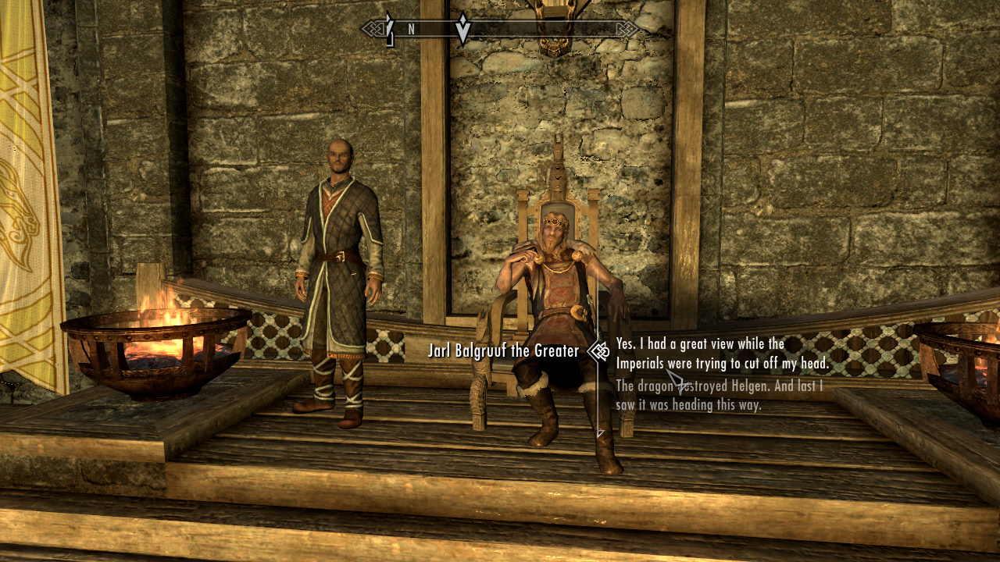
Figure 1. An example of basic branching dialogue from The Elder Scrolls V: Skyrim, published by Bethesda Softworks in November, 2011. Interactive storytelling: “Interactive storytelling” is a broad and generic term used in this report to cover a field of theory and practice that spans multiple mediums, including video games. The terms “interactive storytelling” and “non-linear storytelling” are used synonymously. As McIntosh et al. explain, “Linear stories are written in such a way that the player progresses by reaching predetermined sequential plot points,” whereas non-linear storytelling “includes games that dynamically generate plot elements and alter potential endings based not only on the choices a player makes, but also on other factors such as their performance, timing, or other circumstances tied to the narrative.” Games such as Mass Effect, Heavy Rain, Fallout 3, and Deus Ex: Human Revolution are considered games with non-linear stories. As will be discussed at length in Section 3.2, games with non-linear stories pose unique challenges to game writers, and have important implications for the way software tools are evaluated.
Dialogue tree. “Dialogue tree” is a metaphor used in this report to describe the underlying structure or mechanism of branching dialogue. Although the term has been questioned1 and outright rejected2, it is commonly used in game design parlance, and several relevant terms and concepts are associated with the metaphor, which I have summarized below.
Conversation editor: A software interface specifically designed to support the structuring, authoring, and editing of text for interactive conversations. A conversation editor is usually a part of a toolset or game engine and has special features for video game writing, such as the ability to add conditions and update variables in the game.
Node: A basic unit of dialogue that either the PC or non-player (NPC) speaks in a game.
Branch: As game writer Mat Jobe explains, in the context of a dialogue tree a branch is a “A node and all its subordinate (lower) nodes.”
Link: A link in the context of a dialogue tree is a hyperlink between units of dialogue. “Rather than have their own subordinates, some nodes may link to existing nodes” (Jobe).
Game writing. In this report, “game writing” is used to mean the process and practice of composing the script of the game, as well as developing a game’s plotline, quests, characters, back story, and lore. Not all game writers perform these activities for every video game project, but books such as Dille and Platten’s The Ultimate Guide to Video Game Writing (2007) suggest that game writing as a discipline does encompass these activities.
Game writer. The term “game writer” is used in this report to mean a professional whose primary responsibility is to compose the text for a variety of narrative components of a video game. Experienced game writer Angel Leigh McCoy (2011) has classified these types of writing in several ways: scenes between NPCs, talk lines, conversations, cinematics, UI text for menus, reward text, tool tips, and instructional text. I try to use the term “game writer” consistently in this report, but do not intend it to be too restrictive. For example, “game writer” may apply to a student who is studying game writing but is not yet employed; a hobbyist who does a lot of game writing for her user-generated game content; or a game designer who spends half of her time writing dialogue and designing quests. The term has significant overlap with a “narrative designer.”
Narrative design. “Narrative design” is used in this report to mean the entire process and practice of communicating story in a video game. Narrative design not only encompasses game writing, but the technical methods through which story is convey through the medium of video games. For example, a narrative designer may be involved in the design of the levels, gameplay, sound, lighting, and interaction to ensure all elements are appropriate within a game’s narrative context and consistent with the overarching narrative themes. Although I often use the terms “game writer” and “narrative designer” in the same sentence, I do not mean to say they are the same, although they may often perform similar activities.
Game engine. A game engine is a software system for creating video game. Game engines typically have integrated tools for the fundamental components of game design, such as graphics rendering, animation, sound, scripting, and a host of other functions. In this report, I have used the terms “game engine” and “toolset” more or less synonymously. Examples of toolsets include the DA Toolset developed by BioWare, and the Garden of Eden Creation Kit™ developed by Bethesda Softworks.
3 Methodology
3.1 Tool Selection
To narrow the scope of the evaluation and choose tools that would be relevant to game writers and designers, I first developed a list of prominent tools that can be, have been, or currently are used for interactive storytelling in video games. Tools were grouped under three major categories:
- Tools designed specifically for the needs of an interactive medium.
- Proprietary game engines or toolsets that include “dialogue editors” or “conversation editors.”
- Tools designed for traditional, linear storytelling or for more generic content authoring purposes.
Once I created the list, I applied three criteria to narrow it down:
- The relative degree of each tool’s applicability to the unique demands of nonlinear storytelling.
- The relative degree of each tool’s prominence among game writers.
- The cost of each tool, as well as whether it could be fairly and accurately evaluated in the given period of time.
Of these criteria, I considered the first one to be the most important, since the findings of my literature review underscored the limitations of conventional authoring software and suggested the need to evaluate tools for non-linear storytelling. Ultimately, I selected articy:draft (beta), Chat Mapper, the DA Toolset, and Microsoft Excel (2007) from the list. The main reason for this selection was that these tools are representative of three of the most common categories of tools that narrative writers and designers are likely to encounter. Other factors were involved in my decision, however. For more information on other tools I considered for evaluation, as well as a more detailed explanation of my rationale, see Section 8, “Appendix A: Rationale for Tool Selection.”
3.2 Literature Review
To deepen my understanding of the needs of game writers and designers, gather evidence for which criteria to include in my evaluation, and inform the development of the online survey, I reviewed a range of secondary sources, including academic articles, books, and articles from the industry Web site Gamasutra (www.gamasutra.com). What soon became clear is that the interactive nature of video games presents unique challenges to writers and designers, and these challenges in turn underscore the limitations of conventional authoring software tools. By understanding these limitations, I was able to develop more realistic questions in my survey and carry out a more informed evaluation.
First, because the direction of interactive conversation in a game is meant to be steered by the player, writers cannot fully predict which conversation path the player is going to choose. As McIntosh et al. ask, “How would you write for dialogue that could end in multiple ways which would lead to another dialogue that would also then lead to a number of new choices?” Questions like these led McIntosh et al. to argue that tools like Microsoft Word and Excel are inadequate because of their linear way of organizing and linking information. A similar point is made by Owen et al. (2008) in their report on their interactive conversation editor, SimDialog. “Even if the NPC has only one path in the conversation,” write the authors, “the player must have options from which to choose, so that the game creates the illusion of influencing story progression. Hence, the dialog must be described in a more complex format than a script” (4, emphasis mine).
Second, game writers and narrative designers must constantly deal with the classic tension between agency and authorial control (Dinehart, 2011). If one of the major goals of interactive storytelling is to present the player with choices that affect the outcomes of the story, writers must create alternative plots and conversations, which greatly increases the amount of text to be written and thus the number of production resources required (Dille and Platten, 47-48). Thus, software tools for interactive storytelling should make it as easy as possible to manage and maintain story content, and to integrate seamlessly with the game production pipeline—a point which game writer Darby McDevitt (2010) emphasized in his 2010 Gamasutra article “A Practical Guide to Game Writing.”
A third challenge in game writing is the use of conditions and variables, which are essential to developing branching dialogue for non-linear stories, but are not available in conventional authoring tools. McIntosh et al. describe the problem well:
Nonlinear stories are often linked by conditions. For example, it may be that certain plot points are revealed after a player completes a required action. Or, a certain action by the player may exclude an entire portion of the story. This is very difficult to express using traditional storytelling tools. For example, when we write stories in English, we write them from the top of the page down, tying events together by time. As such, most word processing or storytelling software is designed the same way. The expectation is very linear; there is a first, second and a third part, all tied together by time.
Fourth, no matter how well written the dialogue or story content is, it must ultimately be loaded into whichever game engine the game developers are using. As one game writer pointed out in a discussion on the Game Writer’s LinkedIn forum (Jack 2011), a game studio’s production pipeline may dictate which tool the game writer and/or narrative is allowed to use. The ideal game writing tool should therefore make the script export and loading process as seamless as possible, or at least as technically feasible as possible.
3.3 Online Survey
The purpose of the online survey was to collect primary data from game writers, developers, and designers regarding the weight they would assign to particular evaluation factors or capabilities if they were to choose a software tool for their own needs. I later used the weightings in my scoring process to avoid a purely subjective analysis. I designed and delivered the survey using Survey Monkey™, and the complete results can be found in Section 10, “Appendix C: Complete Survey Results.” The survey was open from October 29th through November 21st. A link to the survey, along with an announcement and a description of the survey’s purpose, was provided on the web sites listed below.
International Game Developers Association, Writing Special Interest Group (https://www.igda.org/forum/what-do-you-look-game-writing-tool)
International Game Developers Association, Tools Special Interest Group (http://thetoolsmiths.org)
Game Writers Group on LinkedIn (http://www.linkedin.com)
Dialogue Junkie (www.dialoguejunkie.com), my hobby site about video game dialogue
The survey, which was completely anonymous, asked participants about their experience in game writing and design, as well as which tools each they have used to write branching dialogue. The bulk of the survey asked participants to rank a list of software evaluation factors or capabilities on a scale of 1 through 7, where a rank of 1 indicated a factor that was “Critical,” while a rank of 7 indicated a factor that was “Irrelevant.” (I later reversed this scheme so that “7” referred to “Critical” while 1 referred to “Irrelevant.” See Section 3.4.1 for a detailed explanation of this change.)
For the sake of order and simplicity, each factor that participants were asked to rank was grouped under one of the following categories:
- Collaboration and Story Design
- Branching Dialogue
- Character Design
- Locations
- Export and Integration Pipeline
- Usability and User Interface
- Cost, Learning and Support
I derived these groupings from four sources of information: (1) past research I have conducted on video game theory and rhetoric, (2) information from my literature review, (3) my knowledge of and experience with writing branching dialogue, and (4) my experience with the functionalities of each game writing tool I had selected for evaluation. In Section 6, “Conclusion,” I discuss how future research should refine or extend the list to not only be as comprehensive as possible, but as representative as possible of the real interests and constraints of game writers, narrative designers, and software and database engineers who must ensure the story content gets loaded successfully into a game engine. My analysis of the results of the survey is presented in Section 4.1, “Results from Survey.”
3.4 Scoring Process
To give scores to the four tools in this project, I used a conventional method for calculating a weighting for each individual capability, and subsequently for each grouping of capabilities. I also assigned a subjective score to each tool’s features, and multiplied the subjective scores by each group’s average weighting to produce a final score. The following sections describe my scoring process in more detail.
3.4.1 Procedure for Calculating Weightings
As described in Section 3.3, “Online Survey,” survey participants ranked each desired factor or capability on a scale of 1 through 7. Participants were told that a rank of 1 indicated a factor that was “Critical,” while a rank of 7 indicated a factor that was “Irrelevant.” I exported all the data I collected from the respondents to an Excel spreadsheet, where I calculated the weighted average for each capability, and rounded each value to two decimal places. As an example, the table below depicts the responses I received for all the capabilities grouped under the category “Collaboration.” The table also shows that I calculated the average of the weighted averages to return a value for each grouping of desired capabilities. For example, the table below shows that the Collaboration grouping as a whole received an average weighting of 5.75.
Note: As I explain below in Section 4.1.6, “Significance of Results,” I later reversed the meaning of the numbers in my scale so that “7” referred to “Critical” while 1 referred to “Irrelevant.” I had to make this reversal because the numbering scheme I used to assign subjective scores to each factor was resulting in scores that were misleading. The reversal did not change the data I received from participants, and it allowed my calculations to produce more accurate and sensible results.
Collaboration
(7 = “Critical” and 1 = “Irrelevant”)
| Answer Options | 7 | 6 | 5 | 4 | 3 | 2 | 1 | Response Count | Weighted Average |
|---|---|---|---|---|---|---|---|---|---|
| Ability to have web-based collaboration for multiple authors | 1 | 6 | 5 | 6 | 5 | 2 | 1 | 26 | 4.31 |
| Ability to have version history and version control of your writing-related files | 8 | 6 | 5 | 5 | 2 | 0 | 0 | 26 | 5.50 |
| Ability to view, create, and edit a “storyboard” view of story events | 6 | 8 | 3 | 5 | 3 | 0 | 1 | 26 | 5.19 |
| Ability to create and edit a story outline | 12 | 7 | 3 | 2 | 0 | 1 | 1 | 26 | 5.85 |
| Ability to associate content with a story outline and/or storyboard (e.g., group dialogue under specific parts of the outline) | 7 | 6 | 8 | 2 | 2 | 0 | 1 | 26 | 5.38 |
| Number of respondents who answered these questions | 26 | – | |||||||
| Number of respondents who skipped these questions | 7 | – | |||||||
| Average of Weighted Averages for “Collaboration” | 5.25 |
It is important to recognize that the weighted averages for each category were skewed, because not every category had the same number of factors or capabilities to be scored. For example, the Collaboration category had five factors/capabilities, whereas the Character Design category only had three. For this reason, the Collaboration category probably received a higher score. As I explain in Section 6, “Conclusion,” it would be appropriate in future research efforts to ensure that every category has the same number of factors / capabilities. This way, each category would have the same chances at getting as high a score as possible.
3.4.2 Scale for Assigning Subjective Scores
My subjective scoring approach was focused on two facets: (a) whether or not each tool has a feature that meets the factors listed in my survey; (b) the relative quality of the feature, such as whether it saves time, is easy to use, produces reliable output, or minimizes long-term maintenance. With these criteria in mind, I scored each factor using a scale of 0 to 4.
Note: If a tool did not have a capability, but there was documentation to prove that it was under development or planned for future implementation, I gave it an automatic score of 1.
| 4 | Capability exists, works well, and requires little to no effort to use on the part of the user. |
| 3 | Capability exists, but requires some workaround or has some limitations. For example, the capability might not be very intuitive, or it requires input from the user that could be streamlined or automated. |
| 2 | Capability exists, but requires significant amount of effort to use or understand. |
| 1 | Capability exists, but it requires a very significant amount of effort to use. For example, the capability requires a time-consuming workaround or third-party software in order to achieve the same effect. Or, the capability does not currently exist, but it is being developed or is planned for development. |
| 0 | No, the capability does not exist. |
My assumption with this scale was that it is not enough for a tool to simply possess a feature or function. A software evaluation must also consider how well the capability works, how easy it is to use, how high the learning curve is, whether or not using the capability calls for a special type of knowledge (such as knowledge of a programming language), and whether there are any drawbacks in how the capability is implemented.
3.4.3 Procedure for Calculating Final Scores
Once I had both the weightings and the subjective scoring system defined, I was able to calculate a final score for each tool. I used the following procedure to calculate the final score.
Record each capability’s individual weighted average, as per the survey data. For example, according to the survey data, the weighted average for “Ability to specify and edit ‘preconditions’ for your dialogue” was 6.39.
Calculate the average of weighted averages for each category of capabilities. For example, the average weighted average for “Branching Dialogue” was 5.88.
Assign a subjective score (0 through 4) to each tool’s individual capability. For example, with respect to articy:draft, I gave a subjective score of 3 to “Ability to specify and edit ‘preconditions’ for your dialogue.”
Add up the total subjective scores for each tool’s category of capabilities. For example, for articy:draft, the total subjective score for all the capabilities under “Branching Dialogue” was 11.
Multiply each tool’s total subjective score by the average weighting from the appropriate category. For example, for articy:draft, the score for the category of “Branching Dialogue” was 11 x 5.88 = 64.68.
Add up the scores from each tool’s category of capabilities to generate a final score.
Example
- Collaboration Score: 94.5
- Branching Dialogue Score: 64.68
- Character Design Score: 41.4
- Assets, Locations, and Integration Score: 88.4
- Usability and User Interface Score: 102.6
- Cost Learning and Support Score: 62.28
- Other Factors Suggested by Survey Respondents Score: 10
Total: 463.86
Section 4.3, “Results from Weightings and Subjective Scoring Process” presents the results of this scoring procedure for all the tools in my evaluation.
4 Results
4.1 Results from Survey
In the time that the survey was open for participation, I collected responses from 33 individuals and have categorized my analysis under the following sections: (a) participants’ background, (b) participants’ experience and tools, (c) participants’ rankings, (d) voluntary answers, and (e) significance of results.
4.1.1 Participant Backgrounds
Figure 2 shows that of the 33 participants of the survey, 9 identified themselves as a “Game writer and/or editor,” 11 as a “Game developer and / or designer,” and 3 of as a “Narrative Designer.” Students, content writers, and aspiring game writers also participated. Participants in the “Other” category added the following designations: “IS-Videodesigner,” “Researcher in Game Design and Development,” and “Multiple Trades.”
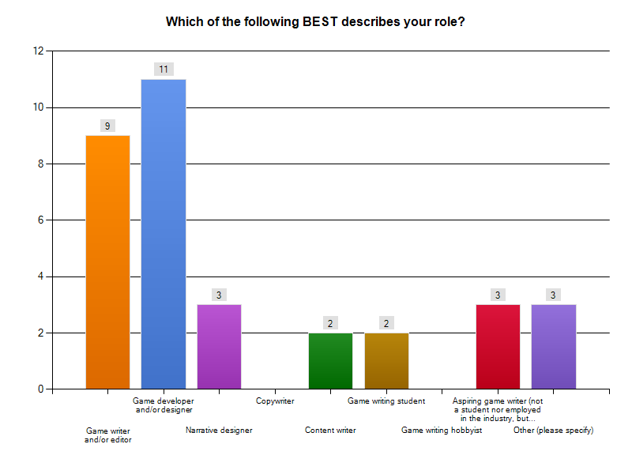
Gathering this data was a critical step toward avoiding a purely subjective evaluation. However, as the figure shows, the amount of data does not reflect a representative sampling of game writers and narrative designers in the gaming industry. Therefore, in my conclusion, I suggest a more in-depth recruiting and survey design strategy through which data could be collected from a larger number of individuals and a broader cross-section of the industry to obtain results of statistical significance.
4.1.2 Participant Experience and Tools
The next section of the survey asked participants about their experience with branching dialogue. The results indicate that of the 33 participants, 21 “currently work in the gaming industry,” and the 20 have written “conversation trees or branching dialogue” before. This may have led to skewed results for two reasons. First, people who currently work in the industry are more likely to have a more accurate understanding of the requirements of a writing tool during a video game effort. Secondly, people who have written branching dialogue are more likely to understand the challenges of non-linear storytelling, and therefore may have more accurate insights into what the weighting of a particular software capability should be. Nonetheless, the numbers show that a majority of survey participants were industry veterans with experience in creating branching dialogue. An enhanced version of the survey might try to quantify how much experience each participant brings to the survey.
Survey participants were also asked about software tool usage, the intent of which was to identify software tools are the most commonly-used for developing branching dialogue. (See Figure 3.) If the participant had never written branching dialogue, he or she was asked to indicate this under “I have not written branching dialogue before.” Twelve of the 33 participants had never written branching dialogue, whereas the rest of the participants had used some type of tool to write branching dialogue.
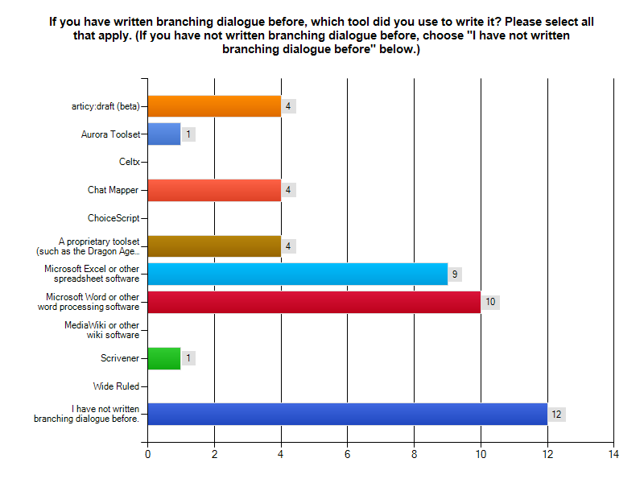
In the “Other” category, I received the following responses from the participants regarding tool usage: (1) “Post it notes,” (2) “Scenejo,” (3) “Final Draft, HTML,” and (4) “UMLet (http://www.umlet.com/).” Yet the results reveal that the most commonly-used software tool for writing branching dialogue is Microsoft Word, with Excel following a close second. So, despite the variety of tools available, the survey suggests that the majority of tools in use are conventional content authoring or word processing tools.
4.1.3 Participant Rankings
The next section of the survey asked participants to rank the importance of particular evaluation factors or capabilities of interest. Figure 4 depicts the rankings that participants gave to factors listed under the Collaboration category. See the Appendix for a complete listing of rankings for every category.
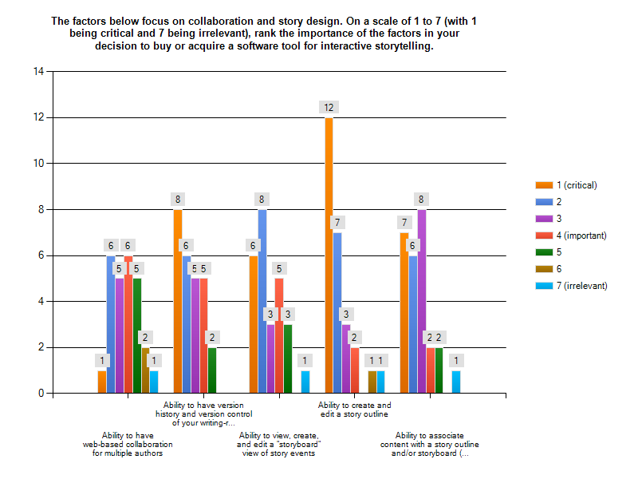
The ability to create and edit a story outline received the highest ranking. Twelve participants gave that factor a score of 1 (i.e., “Critical”), and seven participants gave it a score of 2. By contrast, the data shows how the ability to have web-based collaboration for multiple authors received an even distribution of rankings. I interpreted this to mean that, on average, web-based collaboration was not as important to the participants as the ability to have a story outlining functionality.
4.1.4 Participant Perspectives on Cost
After the questions about evaluation factors, the survey asked participants about what they considered to be an affordable price range for a single license of their game writing software tool. The results are depicted in Figure 5. As the figure shows, seven participants thought $50-200 would be an affordable price range, and four participants considered “affordable” to mean $0-50. When comparing the actual prices of each tool (see Section 5.2, “Cost Comparison” for a table of prices), it is interesting to note that every tool but articy:draft would be considered “affordable.” However, additional research would need to be performed to verify such an observation, since it is quite possible that people would be willing to pay extra money to use articy:draft.
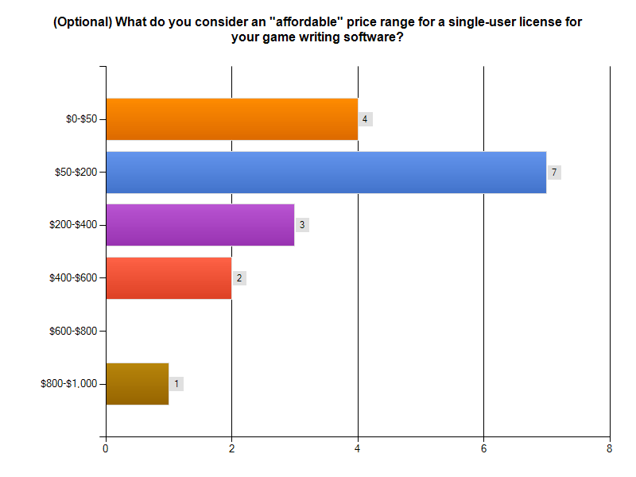
4.1.5 Voluntary Answers
As mentioned above, a number of participants responded to requests for additional information. For example, in the Collaboration category, three participants stressed the importance of peer review and editorial markup, or “Any form of track changes that allows other authors/collaborators to see what you have altered.” This emphasis might in part explain why Microsoft Word is a popular tool among game writers and designers.
Moreover, in the Branching Dialogue category, there was a pattern among comments regarding the ability to toggle between conventional linear views of information and more complex views with branches and loops. One participant in particular asked for “The ability to ignore a dialogue tree structure and use a flatter structure for dialogue.”
Finally, at the end of the survey, two participants commented on their desire for a simple interface that allows them to focus on the words. Said on participant: “When I create stories, high level design documents and write dialogue, I want to be able to do so without the interface getting in the way. I want to do as much as possible through the keyboard and only reach for the mouse when absolutely necessary.” Similarly, another participant emphasized, “That the bells and whistles don't overwhelm the actual writing element of the software. It should be as easy to use as Final Draft or Word for writing.” And two participants voiced concerns about configuration settings and integration with existing technology. “Programmers should be able to define constraints to a specific project. E.g., that the lines of a dialogue must not exceed a distinct number of characters, or, which emotions can be triggered by a dialogue...” said one participant. Another expressed a desire for, “Acces[s]ible API or SDK for user-created modifications and extensions/integration within other game technologies”
As a result of this input, I developed an area of evaluation called “Other Factors Suggested by Survey Respondents.” The scores for these factors do not have a weighting associated with them, since I did not collect any survey data on them, but they do factor into the total score for each tool.
4.1.6 Significance of Results
As illustrated above in Figure 2, the number of survey participants was not a representative sampling of game writers and narrative designers in the gaming industry. In my conclusion (see Section 6), I suggest an enhanced survey strategy through which data could be collected to result in data with greater statistical significance. Furthermore, as briefly mentioned in Section 3.4.1, “Procedure for Calculating Weightings,” my procedure for calculating the weightings was skewed in two ways.
First, not all 33 participants answered every question in the survey. For instance, in the area of Collaboration, 26 participants responded, while under Usability and User Interface, only 19 participants responded. The Usability and User Interface category might have had higher weighted averages if the same number of participants responded to every question. I partially accounted for this by including the number of respondents in my weighted averages, but my calculations did not factor in an appropriate margin of error.
Second, the weighted averages for each category are skewed because not every category has the same number of factors or capabilities available for scoring. For example, the Collaboration category has five factors/capabilities that can be scored, whereas the Character Design category only has three. For this reason, the Collaboration category is more likely to have a higher average weighting than the Character Design category.
Despite these sources of error, the survey still brought in the perspectives of other individuals, and thus helped reduce the level of subjectivity in my evaluation.
Note: In the original survey, participants were informed that a “1” referred to a “Critical” factor and a “7” referred to an “Irrelevant” factor. However, this scale was problematic because it assumed that a low score is a good score, whereas my subjective scoring scale (in which a “0” is low and a “4” is high) assumed that a high score is a good score. This led to confusion and inconsistencies in the data when I multiplied the average weightings from the survey against my subjective scores. To solve this problem, I reversed the definition of the numbers in the ranking scale so that “7” referred to “Critical” while 1 referred to “Irrelevant.” This reversal did not change the data I received from participants, since the definitions were arbitrary.
Using the data from the survey, I calculated the weightings for each category. In the table below, the categories are sorted the highest to lowest weightings. The weightings suggest that overall, participants place the highest priority on factors related to branching dialogue, and place the lowest priority on factors related to character design. Furthermore, as explained in Section 3.4.2, the weightings are only half of the scoring process. The weightings were used in combination with my subjective scores to calculate a total score for each tool. The total scores can be seen in Section 4.3, “Results from Weightings and Subjective Scoring Process.” Furthermore, tables with the results of the survey and the weighted averages for each table can be found in the Appendix.
| Average Weighting for All Groupings | |
|---|---|
| Grouping | Weighting |
| Branching Dialogue | 5.88 |
| Usability and User Interface Design | 5.40 |
| Collaboration | 5.25 |
| Assets, Locations, And Integration | 5.20 |
| Cost, Learning, and Support | 5.19 |
| Character Design | 4.60 |
4.2 Results from Assessment of Each Tool’s Capabilities
Apart from the weightings and the subjective scores, an important step in my evaluation was to determine whether certain capabilities currently exist in the tools I selected for evaluation. I soon discovered that this step was not as simple as saying yes or no. Some tools had a capability fully implemented, while others had the same capability partially implemented, while still others could achieve the capability’s desired effect through a less-than-ideal manual workaround. I therefore devised the following qualitative scheme for visually representing the availability of each tool’s capabilities.
| ✓ Yes | The capability exists in full, or the capability is available through a combination of features. |
| ◐ Partial | The capability exists, but it requires a significant level of effort or a manual workaround solution to achieve the capability’s desired effect. |
| ✗ No | The capability does not exist at all, and to the best of knowledge, there are no workarounds. |
I based this scheme on my subjective experience using and testing each tool. The results are shown in the table below.
Note: This table should not be analyzed in isolation from the table in Section 4.3, “Results from Weightings and Subjective Scoring Process,” nor should it be read apart from the detailed commentary I provide in Section 9, “Appendix B: Detailed Analysis of Each Tool’s Capabilities.” For one thing, the table below does not account for the weighting of each capability. In other words, a tool might possess a wide variety of capabilities, but that does not mean those capabilities are a high priority to game writers and narrative designers. Additionally, while the icons below provide a visual summary of my evaluation, the results of my scoring process present my evaluation results on a deeper level of granularity.
Legend: ✓ Yes = Exists; ◐ Partial = Exists with a workaround or is somehow “less than ideal”; ✗ No = Does not exist
Collaboration and Story Design
| Capability | articy: |
Chat Mapper | DA Toolset | Excel |
|---|---|---|---|---|
| Ability to have web-based collaboration for multiple authors | ✓ Yes | ◐ Partial | ◐ Partial | ◐ Partial |
| Ability to have version history and version control of your writing-related files | ✓ Yes | ✗ No | ✓ Yes | ✗ No |
| Ability to view, create, and edit a “storyboard” view of story events | ✓ Yes | ✗ No | ✗ No | ◐ Partial |
| Ability to create and edit a story outline | ✓ Yes | ✗ No | ✗ No | ◐ Partial |
| Ability to associate content with a story outline and/or storyboard | ✓ Yes | ✗ No | ✗ No | ◐ Partial |
Branching Dialogue
| Capability | articy: |
Chat Mapper | DA Toolset | Excel |
|---|---|---|---|---|
| Ability to display your conversations in a tree-like view showing collapsible nodes and branches | ✗ No | ✓ Yes | ✓ Yes | ◐ Partial |
| Ability to display your conversations in “process flow” view showing nodes and branches (e.g., similar to Visio flow diagrams or decision tree diagrams) | ✓ Yes | ✓ Yes | ✗ No | ✗ No |
| Ability to specify and edit “conditions” for your dialogue (e.g., a dialogue displays or does not display if certain criteria are met, such as possession of an object or completion of a quest) | ✓ Yes | ✓ Yes | ✓ Yes | ◐ Partial |
| Ability to specify “outcomes” and “variables” for your dialogue (e.g., when a conversation is finished, the player gets an item or some other event happens) | ✓ Yes | ✓ Yes | ✓ Yes | ◐ Partial |
| Ability to simulate (i.e., run a mini play test on) a complex branching conversation you have created | ✗ No | ✓ Yes | ✓ Yes | ✗ No |
Character Design
| Capability | articy: |
Chat Mapper | DA Toolset | Excel |
|---|---|---|---|---|
| Ability to import character concept art (e.g., portraits, sketches, etc.) and associate them with dialogue snippets and/or character sheets | ✓ Yes | ✓ Yes | ◐ Partial | ◐ Partial |
| Ability to select and fill out predefined character sheets, and then easily display and cross reference those sheets while writing dialogue | ✓ Yes | ✓ Yes | ◐ Partial | ◐ Partial |
| Ability to add custom fields to the predefined character sheets if the default fields aren’t enough. | ✗ No | ✓ Yes | ✗ No | ◐ Partial |
Assets, Locations, and Integration
| Capability | articy: |
Chat Mapper | DA Toolset | Excel |
|---|---|---|---|---|
| Ability to fill out and reference “location” sheets that describe the levels and environments in your story | ✓ Yes | ✓ Yes | ✗ No | ◐ Partial |
| Ability to import assets (e.g., concept art, level layouts) so they can be referenced while creating your story | ✓ Yes | ◐ Partial | ◐ Partial | ◐ Partial |
| Ability to export project files to XML format | ✓ Yes | ✓ Yes | ◐ Partial | ◐ Partial |
| Ability to export script to a standard document format, such as a script format for voice actors | ✗ No | ✓ Yes | ◐ Partial | ◐ Partial |
| Ability to integrate script seamlessly in a proprietary game engine | ◐ Partial | ◐ Partial | ◐ Partial | ◐ Partial |
| Ability to display a map and indicate the locations and/or “patrol routes” of NPCs | ✓ Yes | ✗ No | ◐ Partial | ◐ Partial |
Usability and User Interface
| Capability | articy: |
Chat Mapper | DA Toolset | Excel |
|---|---|---|---|---|
| The tool’s user interface is visually appealing | ✓ Yes | ◐ Partial | ◐ Partial | ✓ Yes |
| The tool’s user interface is user-friendly and intuitive | ✓ Yes | ◐ Partial | ◐ Partial | ✓ Yes |
| The tool requires little to no knowledge of coding, scripting, or programming | ✓ Yes | ◐ Partial | ◐ Partial | ✓ Yes |
| The tool’s user interface lets me display different panels of information for easy cross-referencing | ✓ Yes | ✓ Yes | ✓ Yes | ✓ Yes |
| The user interface is highly-customizable (e.g., I can show, hide, and resize panels of information very easily) | ✓ Yes | ✓ Yes | ✓ Yes | ✓ Yes |
Cost, Learning, and Support
| Capability | articy: |
Chat Mapper | DA Toolset | Excel |
|---|---|---|---|---|
| The tool is supported by an active and responsive service desk and/or online help forum | ✓ Yes | ◐ Partial | ◐ Partial | ✓ Yes |
| The tool has a detailed help system embedded in the application or accessible online | ✗ No | ◐ Partial | ◐ Partial | ✓ Yes |
| The tool has video tutorials, Getting Started guides, and other information resources freely available | ✓ Yes | ✓ Yes | ✓ Yes | ✓ Yes |
| The tool’s learning curve is low | ✓ Yes | ◐ Partial | ✗ No | ✓ Yes |
| The tool has competitive pricing options for both individual and multi-user licenses | TBD | ✓ Yes | ◐ Partial | ✓ Yes |
Other Factors Suggested by Survey Respondents
| Capability | articy: |
Chat Mapper | DA Toolset | Excel |
|---|---|---|---|---|
| Ability for reviewers to use “tracked changes” or display revisions | ✗ No | ◐ Partial | ✗ No | ◐ Partial |
| Ability for reviewers to add comments | ✓ Yes | ◐ Partial | ✓ Yes | ✓ Yes |
| Ability to quickly and easily switch between a “tree” view and a “process flow” view of the dialogue | ✗ No | ◐ Partial | ✗ No | ✗ No |
| Ability to create and edit in a traditional screenplay / script style format | ✗ No | ✓ Yes | ◐ Partial | ◐ Partial |
| Ability to add voice-over recordings | ✗ No | ✓ Yes | ✓ Yes | ✗ No |
| Accessible API or SDK for user-created modifications and extensions/integration within other technologies | ✗ No | ✓ Yes | ◐ Partial | ✓ Yes |
| The tool has keyboard shortcuts that make navigating the user interface easy | ✓ Yes | ✓ Yes | ✓ Yes | ✓ Yes |
4.3 Results from Weightings and Subjective Scoring Process
The table below presents the total score I calculated for each tool, based on the average weighting for each area of capabilities and my own subjective scores. See Section 3.4.3, “Procedure for Calculating Final Scores,” for an explanation of how the scores were calculated. Note: If a tool did not have a capability, but there was documentation to prove that it was under development or planned for future implementation, I gave it an automatic score of 1.
Scoring Legend: 4 = exists; 3 = requires some workaround; 2 = requires significant workaround; 1 = requires very significant workaround; 0 = does not exist; Avrg Wgt = weighting results from survey.
| Capabilities | articy: |
Chat Mapper | DA Toolset | Excel | Avrg Wgt |
|---|---|---|---|---|---|
| Collaboration and Story Design | 5.25 | ||||
| Ability to have web-based collaboration for multiple authors | 4 | 1 | 2 | 1 | – |
| Ability to have version history and version control of your writing-related files | 4 | 0 | 4 | 0 | – |
| Ability to view, create, and edit a “storyboard” view of story events | 4 | 0 | 0 | 1 | – |
| Ability to create and edit a story outline | 3 | 0 | 0 | 1 | – |
| Ability to associate content with a story outline and/or storyboard (e.g., group dialogue under specific parts of the outline) | 3 | 0 | 0 | 1 | – |
| Sub Score = Sum of scores x 5.25 (average weighting for Collaboration): | 94.5 | 5.25 | 31.5 | 21 | |
| Branching Dialogue | 5.88 | ||||
| Ability to display your conversations in a tree-like view showing collapsible nodes and branches | 0 | 4 | 4 | 1 | – |
| Ability to display your conversations in “process flow” view showing nodes and branches (e.g., similar to Visio flow diagrams or decision tree diagrams) | 4 | 4 | 0 | 0 | – |
| Ability to specify and edit “conditions” for your dialogue (e.g., a dialogue displays or does not display if certain criteria are met, such as possession of an object or completion of a quest) | 3 | 4 | 4 | 2 | – |
| Ability to specify “outcomes” and “variables” for your dialogue (e.g., when a conversation is finished, the player gets an item or some other event happens) | 3 | 4 | 4 | 1 | – |
| Ability to simulate (i.e., run a mini play test on) a complex branching conversation you have created | 1 | 4 | 4 | 0 | – |
| Sub Score = Sum of scores x 5.88 (average weighting for Branching Dialogue): | 64.68 | 117.6 | 94.08 | 23.52 | |
| Character Design | 4.60 | ||||
| Ability to import character concept art (e.g., portraits, sketches, etc.) and associate them with dialogue snippets and/or character sheets | 4 | 4 | 2 | 2 | – |
| Ability to select and fill out predefined character sheets, and then easily display and cross reference those sheets while writing dialogue | 4 | 4 | 2 | 2 | – |
| Ability to add custom fields to the predefined character sheets if the default fields aren’t enough. | 1 | 3 | 0 | 2 | – |
| Sub Score = Sum of scores x 4.60 (average weighting for Character Design): | 41.4 | 50.6 | 18.4 | 27.6 | |
| Assets, Locations, and Integration | 5.20 | ||||
| Ability to fill out and reference “location” sheets that describe the levels and environments in your story | 4 | 3 | 2 | 2 | – |
| Ability to import assets (e.g., concept art, maps, level layouts) so they can be referenced while creating your story | 4 | 2 | 2 | 2 | – |
| Ability to export project files to XML format | 3 | 3 | 2 | 2 | – |
| Ability to export script to a standard document format, such as a script format for voice actors | 1 | 4 | 1 | 2 | – |
| Ability to integrate script seamlessly in a proprietary game engine | 1 | 1 | 1 | 1 | – |
| Ability to display a map and indicate the locations and/or “patrol routes” of NPCs | 4 | 0 | 1 | 1 | – |
| Sub Score = Sum of scores x 5.20 (average weighting for Assets, Locations, and Integration): | 88.4 | 67.6 | 46.8 | 52 | |
| Usability and User Interface | 5.40 | ||||
| The tool’s user interface is visually appealing | 4 | 2 | 2 | 3 | – |
| The tool’s user interface is user-friendly and intuitive | 4 | 2 | 1 | 4 | – |
| The tool requires little to no knowledge of coding, scripting, or programming | 4 | 2 | 1 | 4 | – |
| The tool’s user interface lets me display different panels of information side-by-side for easy cross-referencing | 4 | 4 | 4 | 4 | – |
| The user interface is highly-customizable (e.g., I can show, hide, and resize panels of information very easily) | 3 | 3 | 3 | 3 | |
| Sub Score = Sum of scores x 5.40 (average weighting for Usability and User Interface): | 102.6 | 70.2 | 59.4 | 97.2 | |
| Cost, Learning, and Support | 5.19 | ||||
| The tool is supported by an active and responsive service desk and/or online help forum | 4 | 2 | 3 | 4 | – |
| The tool has a detailed help system embedded in the application or accessible online | 0 | 2 | 3 | 4 | – |
| The tool has video tutorials, Getting Started guides, and other information resources freely available | 4 | 4 | 4 | 4 | – |
| The tool’s learning curve is low | 4 | 2 | 0 | 4 | – |
| The tool has competitive pricing options for both individual and multi-user licenses | TBD | 4 | 2 | 3 | |
| Sub Score = Sum of scores x 5.19( average weighting for Cost, Learning, and Support): | 62.28 | 72.66 | 62.28 | 98.61 | |
| Other Factors Suggested by Survey Respondents | N/A | ||||
| Ability for reviewers to use “tracked changes” or display revisions | 2 | 0 | 2 | 3 | – |
| Ability to quickly and easily switch between a “tree” view and a “process flow” view of the dialogue | 0 | 2 | 0 | 0 | – |
| Ability to create and edit in a traditional screenplay / script style format | 2 | 4 | 1 | 1 | – |
| Ability to add voice-over recordings | 2 | 4 | 3 | 0 | – |
| Accessible API or SDK for user-created modifications and extensions/integration within other game technologies | 0 | 4 | 0 | 4 | – |
| The tool has keyboard shortcuts that make navigating the user interface easy | 4 | 3 | 4 | 4 | – |
| Sub Score = Sum of scores (no weightings were gathered for this category): | 10 | 17 | 10 | 12 | |
| TOTAL SCORE (sum of all Sub Scores): | 464 | 401 | 333 | 330 | – |
5 Discussion
The results of my evaluation show that articy:draft is the most promising and useful software tool for game writers and designers. This is not too surprising, given its wide range of robust and intuitive features. Most importantly, as Figure 6 illustrates, articy:draft provides an innovative, user-friendly integration of the high-level components of non-linear story design, such as multiple narrative paths and alternate endings, with the low-level writing components, such as interactive conversations, character sheets, and locations. It is also significant that articy:draft is easy to learn and has useful features for importing, cross-referencing, and updating game assets and story information while content is being authored. It does not take much time to use the tool to realize that articy:draft was designed specifically with non-linear storytelling in mind—and to recognize that its European developer, Nevigo, has established a solid roadmap of important features for near-future implementation. For this reason, articy:draft received additional scores where it may have otherwise received none. (You can read more about articy:draft’s roadmap at www.nevigo.com/forum/viewtopic.php?f=14&t=35.)
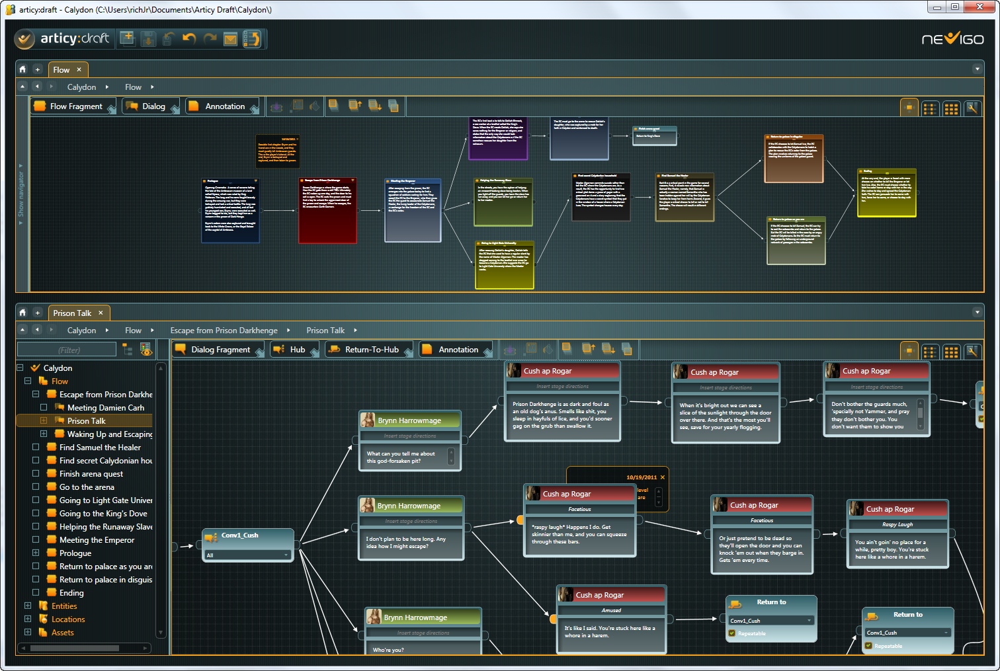
At the same time, the results of the evaluation reveal a wide variation in each tool’s strengths and weaknesses. For example, although articy:draft has the highest overall score, it scored low in areas of high importance, such as the ability to simulate branching dialogue or export content to screenplay script format. (It is worth nothing, however, that these features are planned for future implementation.) Chat Mapper, by comparison, has both a conversation simulator and robust export capabilities (see Figure 7)—capabilities which could easily put Chat Mapper at the top of the list, depending on one’s budget, technical requirements, and other project-specific constraints.
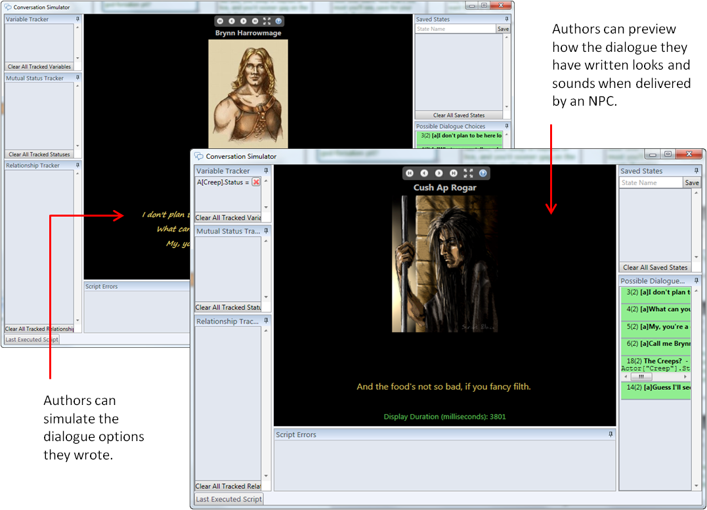
In addition, Excel and the DA Toolset are roughly equal in their overall scores, but not in the scores they received for each evaluation category. Excel scored high, for instance, in the Usability and User Interface category, but the DA Toolset scored much higher in the Branching Dialogue, Collaboration and Story Design, and Other Factors categories. This is obviously because the DA Toolset was designed to be a powerful and robust game engine, with a level editor, conversation editor, high-quality 3-D models, and art assets you can leverage out-of-box. (See Figure 8 below.) The DA Toolset therefore has potentially significant advantages over Excel, Chat Mapper, or articy:draft, despite its high learning curve.
Although Excel received the lowest score, it has notable strengths in terms of its flexibility, ubiquity, wide familiarity, low learning curve, and low cost. Excel is installed on most modern PCs, making it is easy to share and distribute files for collaboration. It is also a relatively flexible pseudo-database tool that, given enough manual effort and smart thinking, can be tailored to address some of the difficult challenges of non-linear storytelling, such as branching dialogue, plot management, and the various types of cross references and variables that non-linear stories require. Although my evaluation did not analyze Excel’s advanced features (such as formulas, quick parts, fields, and macros), there is nothing to say that such features could not be employed to automate highly-manual storytelling tasks. It is clear, however, that the use of Excel’s advanced features will take considerable time to learn and/or implement even for intermediate-level users of the software, whereas tools like Chat Mapper and articy:draft provide such features out-of-box. Still, Excel is fairly intuitive to use for beginners, and there are plenty of support materials, context-sensitive help tips, and tutorials available to turn someone into a power user. Excel also makes it fairly easy to define rows, columns, drop-down lists, and formulas to help manage and update story content and branching conversations.
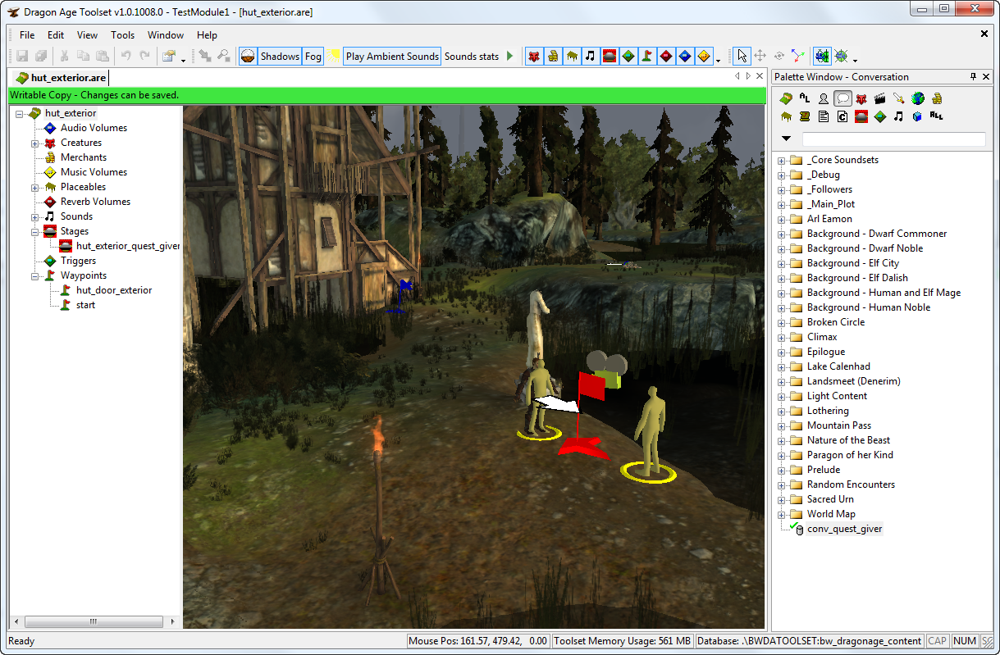
The results of the evaluation undeniably illustrate that different people will be able to produce different scores based on their unique priorities, requirements, and/or constraints. As I discuss in Section 5.3, “Which Tool Should I Get? Summary of Recommendations,” there are compelling reasons to select any one of four of the tools analyzed in this report. I elaborate on some of those reasons and explain why in certain cases articy:draft, Chat Mapper, the DA Toolset, or Excel may be the most suitable option.
Note: The next section provides a summary-level analysis of the pros and cons of each tool for quick reference, and is followed by a cost comparison. For a more in-depth commentary (including additional screenshots) on how well each tool implements a desired capability, see Section 9, “Appendix B: Detailed Analysis of Each Tool’s Capabilities.” I highly encourage readers to refer to both sources of information to gain a comprehensive understanding of the factors involved. The commentary is structured in such a way to facilitate browsing and scanning.
5.1 Summary of Each Tool’s Strengths and Weaknesses
The table below presents a summary-level comparison of each tool’s strengths and weaknesses. The information is based on my subjective experience with each tool’s capabilities as I performed non-linear storytelling tasks in each of the major categories of my evaluation (Collaboration, Branching Dialogue, Character Design, etc.). I strongly encourage other game writers and designers to conduct their own evaluation based on the criteria that matter the most to their personal or organizational needs.
Note: The information in the table below obviously has implications for one’s ultimate purchasing choices and/or recommendations. For a list of my own recommendations, see Section 5.3, “Which Tool Should I Get? Summary of Recommendations.”
| articy:draft | Chat Mapper | DA Toolset | Excel |
|---|---|---|---|
Strengths:
|
Strengths:
|
Strengths:
|
Strengths:
|
Weaknesses:
|
Weaknesses:
|
Weaknesses:
|
Weaknesses:
|
5.2 Cost Comparison
The table below presents a summary-level comparison of each tool, along with source information on where the pricing was obtained at the time this report was written.
| articy:draft | Chat Mapper | DA Toolset | Excel 2010 |
|---|---|---|---|
|
|
|
|
Sources:
|
Source: |
Sources:
|
Source: |
Note: It is worth comparing this table with the feedback that survey participants gave regarding pricing. (See Section 4.1.4, “Participant Perspectives on Cost.”) Most participants considered an “affordable” price range for a game writing tool to be either $0-50 or $50-200. These ranges suggests that every tool except articy:draft would be considered “affordable,” but such an observation would need to be verified by further research. It is quite possible that customers would be willing to pay a higher price for a more powerful, user-friendly tool.
5.3 Which Tool Should I Get? Summary of Recommendations
As I have argued above, selecting a tool for non-linear, interactive storytelling is a highly complex process fraught with ambiguities and dependent on multiple contextual factors. Survey data and secondary sources of information can help the process, but they must be combined with time and direct experience to assess the true extent to which a tool possesses the capabilities a game writer or designer needs in a particular situation. This section therefore presents recommendations distilled not only from my primary and secondary research, but from more than 40 hours of direct personal experience with the tools. (I gave a minimum of 10 hours to each tool.) I also give recommendations on actions that a person or organization can take to conduct an evaluation of their own.
Note: I strongly encourage readers to also refer to Section 9, “Appendix B: Detailed Analysis of Each Tool’s Capabilities” for more information on the capabilities and limitations of each tool, and for more insights into how I arrived at the recommendations listed below.
5.3.1 Recommendations for Each Tool
Choose articy:draft if you want a tool that is at the cutting edge of non-linear storytelling software, has excellent collaboration features, dramatically simplifies storyboarding and branching dialogue, and has a promising roadmap for future development. But be prepared to spend. Without question, articy:draft is the most usable and visually appealing tool, and also the most powerful tool in terms of managing the many paths of a non-linear story and branching conversations. Of the four tools I evaluated, articy:draft provided the best user experience, as well as the best tools for switching between story design, plot management, and writing activities. It also has impressive collaboration features and capabilities for integrating with the overall game production pipeline through its robust ability to import and reference game assets. However, compared to the other tools, articy:draft is on the expensive side, and it currently has at least two critical weaknesses: (a) you cannot simulate conversation, and (b) you cannot export your content to a screenplay / script document format. At the same time, Nevigo (the European company that develops articy:draft) has a compelling roadmap for the tool’s future, and the developers seem aware of the tool’s shortcomings—and how to fix and/or improve them. I would strongly encourage game writers and designers of all kinds to seriously consider articy:draft, but I am not certain the tool will be affordable.
Choose Chat Mapper if you want a tool that is easy to learn, free to use, and provides a conversation simulator. However, be prepared to learn some code, and don’t expect to manage multiple narrative paths easily. Chat Mapper has the clear advantage of a conversation simulator, which is critical for testing and improving your dialogue. There is simply no better way of putting yourself in the player’s shoes and testing the overall interactive experience of your writing. In that sense, Chat Mapper beats articy:draft and is a strong contender against the DA Toolset. Moreover, with a paid license, Chat Mapper lets you export your content to the appropriate screenplay document format—another considerable advantage if you work with voice actors. The problem is that Chat Mapper does not have the powerful storyboarding and collaboration features that articy:draft has. Managing branching conversations is easy, but managing the multiple paths of a non-linear story is simply not possible within the tool itself. Furthermore, Chat Mapper will require you to learn basic Lua scripting to create more complex interactive conversations. I would recommend Chat Mapper if you like the idea of a conversation simulator (I certainly do), are working on a small-scale project, have a low budget, and are willing to learn some Lua before creating any complex branching dialogues.
Choose the DA Toolset if you want a tool that provides a conversation simulator, does not require exporting your project data to a game engine, and lets you create a working game. However, be prepared for a very high learning curve, and be ready to sacrifice a lot of hours you could have spent writing. I am surprised that the DA Toolset did not score higher in my evaluation, but the main reason is its lack of usability and poorly-written documentation. It is an immensely powerful tool, with a good branching conversation editor that is tightly integrated with conditions, plots, and triggers. But even with an active user community and a wiki filled with documentation, the toolset takes exceptional time and effort to understand. When I tested the tool (I invested about 15 hours in using it), I spent the least amount of time writing, and the most amount of time setting properties, troubleshooting errors, and reading tutorials that were hard to follow, incomplete, and in some cases out of date. Even after more than 15 hours of using the software, I could not finish developing a basic quest. The learning curve may be worth it in the end, though, depending on one’s needs and requirements. The software is free with a copy of the DA:O (which can be purchased for less than $5), and the output is high quality. I would highly recommend it for a team that wants to develop an RPG but has a low budget for a game engine and is willing to expend the effort to learn the features. I would also recommend it for game writers or designers who are willing to invest significant time to learn the basics of game engine usage and produce working game versions in which you can simulate the overall experience of the control, dialogue, and overall story. At the same time, I would recommend that such writers work with someone with a technical background in programming, database management, and/or digital modeling.
Choose Excel if you want an easily accessible, widely-recognized tool at a low cost. However, be prepared to handle the manual task of updating cross-references, character names, concept art, and other variables in your writing. Data from the survey shows that conventional tools like Excel and Word are two of most commonly-used tools among game writers. (See Section 4.1.2, “Participant Experience and Tools” for details.) Excel is indeed a good option if you already have it installed and cannot afford to buy or invest the time to learn software tailored specifically to interactive storytelling. Excel has a flexible and intuitive interface, along with ample help content, tutorials, and technical support. Additionally, Excel content can be exported in XML format and will therefore integrate well with the game production pipeline—though this process will require the expertise of a programmer to ensure the content is loaded into the game engine correctly. And as discussed in a report on the state of voice acting in video games (Stuart 2010), spreadsheets are often used by voice actors during audio production. The major drawback of Excel is that it was not designed with non-linear storytelling in mind. Writing conditions is a highly manual process, as is updating content that is likely to vary throughout the project life cycle, such as character names, location names, or the order of events. Excel also forces you to use workarounds if you want to perform robust outlining and storyboarding activities. With this in mind, I would recommend Excel for agile, small-scale game writing projects where budget is a major constraint, or where there is little time to explore alternatives.
5.3.2 Actions You Can Take
If possible, acquire and test a tool that lets you simulate branching dialogue. A simulator will not work unless you have written your dialogue correctly, and this forces you to constantly think of the consequences of the conversations you write. Moreover, it is one thing to write the content in a static script, and quite another thing to interact with it and experience it on screen. A simulator will go a long way in helping you imitate the experience of your audience and refine your branching conversations accordingly. This is one reason why articy:draft (which does not currently have a conversation simulator) may not be the best game writing tool for your situation, even though it received highest overall score in this evaluation.
When evaluating a tool for game writing, make sure rigorously test the features that seem the most ambiguous or have the least documentation. For example, in articy:draft, Excel, and Chat Mapper, the ability to export to XML is obviously an advantage, but once the data is exported, what is the next step? How easy is it to integrate the contents of the XML file into production pipeline? There was little to no documentation in articy:draft or Excel to answer these questions. Chat Mapper does provide some documentation on a script that will load content from Chat Mapper into a Unity Game Engine, but I did not have the opportunity to test this process. I also could not find any documentation in the DA Toolset wiki on this subject.
Plan to invest time in continually learning about the concepts and technology behind conditions, scripts, and variables. Conditions and variables are not only fundamental tools for implementing non-linear storytelling, but they teach you a lot about the procedural considerations that programmers need to address. Tools such as Chat Mapper and the DA Toolset use conditions, scripts, and variables extensively (and so will articy:draft, according to the tool’s roadmap for future development). The more you understand such concepts, the easier it will be to learn and leverage game writing or interactive storytelling software to suit your interactive storytelling needs. For more information about how the tools I evaluated handle these elements, see Section 9.2, “Branching Dialogue”, which is under Appendix B.
When selecting a software tool, create a list of criteria and weightings tailored to your situation, rather than listing every feature you can possibly think of. The scores in this report assume that a person or organization will use all of the evaluation factors that were included in the table in Section 4.2, but this will not always be the case. The best thing a person or organization can do is choose a mix and match of factors or capabilities that are of high priority in a particular situation. Some capabilities may not be necessary to include—or at least greatly minimized—depending on the situation. For instance, for an Indie studio where budget is a crucial constraint, it will be important to give the cost, usability, and learning curve factors a heavy weight. A Triple-A studio, by contrast, might not be as limited in this area.
6 Conclusion
This report presented the findings of an in-depth evaluation of four tools for non-linear storytelling: articy:draft (beta), Chat Mapper, Microsoft Excel 2007, and the Dragon Age Toolset. Although articy:draft received the highest score, the results of the evaluation show a wide variation in each tool’s strengths and weaknesses. For example, although articy:draft has excellent collaboration features, it does not currently have a conversation simulator; although Chat Mapper has an excellent conversation simulator, it does not currently have outlining or high-level plot management capabilities; although the DA Toolset provides the capabilities to produce high-quality video games with non-linear stories, it is extremely complex and entails a costly learning curve; and although Excel is low cost, widely-used, and flexible enough to support the creation of branching dialogues, it lacks the ability to easily maintain content variables such as character names, art assets, plot sequences, and conditions.
These findings underscore the complexity and ambiguity inherent in selecting the right software tool for the job. Therefore, recommendations were given on how each tool may be more suitable than the others, depending on factors such as cost, integration with other technologies, learning curve, feature availability, or project size. Furthermore, an in-depth commentary on each tool’s capabilities was added in “Appendix B: Detailed Analysis of Each Tool’s Capabilities” to illuminate why certain scores were given to each tool in a particular area of evaluation. The commentary gives additional reference information in the event that readers are not satisfied with the summary-level discussion and would like deeper insights into the pros and cons of each tool’s capabilities.
Given more time and resources, this report could be improved and/or extended in several ways. First, the literature review should be expanded to include more academic articles from peer-reviewed journals. The literature review relied on too few academic articles and too many sources from news articles, blog posts, or popular industry Web sites. While these secondary sources were adequate for the purposes of this report, academic sources would help to more reliably define the true problems facing game writers and designers involved in authoring non-linear stories.
Second, the survey data could be improved by recruiting more participants, achieving a representative sample of game writers and designers, and thus generating survey results of statistical significance. Game writers and designers should be recruited, for instance, from a larger number of Web sites that game writers and designers frequent, such as Gamasutra.com, Gamedev.net, Narrativedesign.org, additional forums on LinkedIn, and other Web sites where game writers and designers are known to participate. Funding might also be obtained in order to incentivize the survey by giving small rewards to those who answer every question.
Third, in terms of improving the survey’s design, future efforts should seek to ensure that every evaluation category has the same number of factors/capabilities. This way, each category would have an equal chance of getting as high a score as possible. Moreover, an updated version of the survey should consider incorporating any feedback provided by participants in the “Other” fields, as well as expanding the number of capabilities to score, while at the same time ensuring the survey is not too time consuming.
Fourth, other popular software tools should be considered for evaluation, such as MediaWiki, Microsoft Word, Scrivener, and/or Wide Ruled. Including such tools would likely provide more well-rounded results and lead to more informed decisions. At the same time, including more tools could easily result in information overload. Future efforts should therefore invest significant time in planning how the data could be summarized, displayed, and consumed in a clear, objective, and concise fashion.
Finally, future efforts should evaluate the process of integrating text from a non-linear story’s script into the game production pipeline. For example, such efforts could explore how easy is it to take the XML content exported from articy:draft, Chat Mapper, or Excel and load it into proprietary game engines such as the DA Toolset, the Unity game engine, or the Unreal game engine. The outcomes of such efforts would cast more light on the strengths and weaknesses of each tool under consideration.
Regardless of future efforts, the fact remains that choosing the right software tool can be a complicated decision for writers and designers of interactive stories, considering the many pros and cons to account for when examining tools currently on the market. As both the gaming industry and the art of non-linear storytelling evolve, it seems clear that one of the best steps game writers and designers can take is to share knowledge, opinions, and lessons learned regarding the software tools they have used, currently use, or would like to use to accomplish their storytelling goals.
7 Bibliography
Bateman, C. (2007). Dialogue Engine. In C. Bateman (Ed.), Game Writing: Narrative Skills for Videogames. Boston: Charles River Media.
Border, P. (2005). Dialog as a Game. Proceedings of DiGRA 2005 Conference: Changing Views – Worlds in Play. Presented at the Changing Views: Worlds in Play, Vancouver: Digital Games Research Association. Retrieved from http://www.digra.org/dl/db/06278.58299.pdf
Brusk, J., & Bjork, S. (2009). Gameplay Design Patterns for Game Dialogues. Breaking New Ground: Innovation in Games, Play, Practice and Theory. Proceedings of DiGRA 2009. Retrieved from http://www.digra.org/dl/db/09287.59480.pdf
Dille, F., & Platten, J. (2007). The Ultimate Guide to Video Game Writing and Design. New York: Random House, Inc.
Dinehart, S. (2011, November 11). Game Writers in the Trenches™ 8: Mary DeMarle. Narrative Designer. Retrieved November 19, 2011, from http://narrativedesign.org/.
Ellison, B. (2008, July 8). Defining Dialogue Systems. Gamasutra. Retrieved October 29, 2011, from http://www.gamasutra.com/view/feature/3719/defining_dialogue_systems.php.
Erickson, D. (2009). Writing for Role-Playing Games. In W. Despain (Ed.), Writing for Video Game Genres: From FPS to RPG. Wellesley, MA: A K Peters, Ltd.
Game Scriptwriting Software. (2010, November 1).GameFiction: Games and Story. Retrieved November 19, 2011, from http://www.gamefiction.com/2010/11/01/game-scriptwriting-software/.
Jack, Alan. (2011, May). Tools For Dialogue Writers. Message posted to http://www.linkedin.com/groupItem?view=&gid=89330&type=member&item=50128027&qid=4b42f6b3-e2eb-4666-8dd0-6d231f4a3a77&trk=group_most_popular-0-b-ttl&goback=%2Egmp_89330.
Keeling, Chris. (2011, March). Fellow game writers! Wow, what a great GDC! For those of you who didn't get to go, here are some highlights... Message posted to http://www.linkedin.com/groupItem?view=&gid=89330&type=member&item=46026390&goback=%2Egmp_89330%2Egde_89330_member_50128027.
McDevitt, D. (2010, October 13). A Practical Guide to Game Writing. Gamasutra. Retrieved November 14, 2011, from http://www.gamasutra.com/view/feature/6171/a_practical_guide_to_game_writing.php
McCoy, A. (2011, June 15). “What’s Game Writing Like?” Angel Leigh McCoy. Retrieved November 20, 2011, from http://www.angelmccoy.com/blog/?p=1789.
McIntosh, B., Cohn, R., & Grace, L. (2010, August 17). Nonlinear Narrative in Games: Theory and Practice - GameCareerGuide.com. Game Career Guide. Retrieved November 19, 2011, from http://www.gamecareerguide.com/features/882/nonlinear_narrative_in_games_.php.
Owen, C., Biocca, F., Bohil, C., & Conley, J. (2008, April 30). SimDialog: A Visual Game Dialog Editor. Cornell University Library. Retrieved from http://arxiv.org/abs/0804.4885.
Stuart, K. (2010, March 16). Voicing concerns: the problem with video game acting. Guardian.co.uk. Retrieved October 22, 2011, from http://www.guardian.co.uk/technology/gamesblog/2010/mar/16/games-controversy
Skorupski, J., & Mateas, M. (2009). Interactive Story Generation for Writers: Lessons Learned from the Wide Ruled Authoring Tool. Presented at the Proceedings of the 8th Digital Art and Culture Conference (DAC), Irvine, CA. Retrieved from http://games.soe.ucsc.edu/interactive-story-generation-writers-lessons-learned-wide-ruled-authoring-tool.
8 Appendix A: Rationale for Tool Selection
As discussed above in Section 3.1, “Tool Selection,” I developed a list of prominent tools that can be, have been, or currently are used for interactive storytelling in video games. After reviewing secondary sources of information about game writing, including discussion forums for game writers (such as Keeling, 2011), I identified 12 different tools and grouped them under three major categories, as shown in the list below.
Tools designed specifically for the needs of an interactive medium
articy:draft (www.nevigo.de)
Chat Mapper (www.chat-mapper.com)
ChoiceScript (www.choiceofgames.com)
Wide Ruled (http://eis.ucsc.edu/Wide_Ruled)
Proprietary game engines or toolsets that include “dialogue editors” or “conversation editors”
Aurora Toolset (Included with the PC version of Neverwinter Nights™)
Dragon Age Toolset (http://social.bioware.com/page/da-toolset)
The Garden of Eden Creation Kit (GECK) (http://geck.bethsoft.com/index.php/Main_Page)
Tools designed for traditional, linear storytelling or for more generic content authoring purposes
Celtx (www.celtx.com)
Microsoft Excel (www.microsoft.com)
MediaWiki (www.mediawiki.org)
Microsoft Word (www.microsoft.com)
Scrivener (www.literatureandlatte.com)
Also as described above in Section 3.1, I applied several criteria to narrow the list down, and I ultimately selected articy:draft (beta), Chat Mapper, the DA Toolset, and Microsoft Excel (2007) from the list. My rationale for selecting these tools was threefold:
The tools are representative of three of the most common categories of tools that narrative writers and designers are likely to encounter (proprietary toolsets, third-party software specifically designed for non-linear storytelling, and third-party software dedicated broadly to content authoring).
Three of the four tools (i.e., articy:draft, Chat Mapper, and the DA Toolset) were designed with game writers and designers in mind. There are, of course, other tools that have been specifically designed for game writing, such as Wide Ruled (Skorupski, 2009). However, Wide Ruled is still a work in progress, and Chat Mapper and articy:draft are more mature by comparison. I considered including screenwriting or novel writing tools like Scrivener and Celtx in my evaluation, but I eventually decided to exclude them in favor of tools developed with video games in mind, and also because of time constraints.
The inclusion of Excel offers a well-known tool against which the other tools could be compared conceptually. As revealed in the results of my survey, Excel is the most commonly-used tool among those who took the survey (next to Microsoft Word).
9 Appendix B: Detailed Analysis of Each Tool’s Capabilities
This section gives more detailed information on the rationale behind the subjective scores I assigned to each tool. Each subsection includes a summary of the scores for quick reference, and then describes how each tool measured up against the stated capability. For more information on the scale used for the subjective scores, see Section 3.4.2, “Scale for Assigning Subjective Scores.”
Note: Unless stated otherwise, every feature that is mentioned for Chat Mapper is free and does not require a paying license. For more information regarding the price of each tool, see the commentary under Section 9.6, “Cost, Learning, and Support.”
9.1 Collaboration and Story (Narrative) Design
For quick reference, the table below shows the subjective scores I assigned to each tool in the area of Collaboration and Story (Narrative) Design. The table is followed by detailed commentary on each tool’s factor or capability.
| Factor or Capability | articy: |
Chat Mapper | DA Toolset | Excel |
|---|---|---|---|---|
| Ability to have web-based collaboration for multiple authors | 4 | 1 | 2 | 1 |
| Ability to have version history and version control of your writing-related files | 4 | 0 | 4 | 0 |
| Ability to view, create, and edit a “storyboard” view of story events | 4 | 0 | 0 | 1 |
| Ability to create and edit a story outline | 3 | 0 | 0 | 1 |
| Ability to associate content with a story outline and/or storyboard (e.g., group dialogue under specific parts of the outline) | 3 | 0 | 0 | 1 |
Ability to view, create, and edit a “storyboard” view of story events articy:draft
articy:draft: articy:draft comes with a “flow editor” and “flow fragments” for plotting the sequences of events in your game in a storyboard fashion. (See Figure 10.) You can connect the fragments using a simple drag and drop technique on a virtual zooming canvas. The result is a branching network view of events comparable to what you see in Microsoft Visio, except that you are not limited by the size of a document. You can title each fragment, write a brief summary of what it refers to, add pictures to give a visual reference, and place “inbound” and “outbound” connectors between each fragment. You can also embed fragments within each other, so that one fragment can contain lower-level fragments, allowing you to drill down multiple layers.
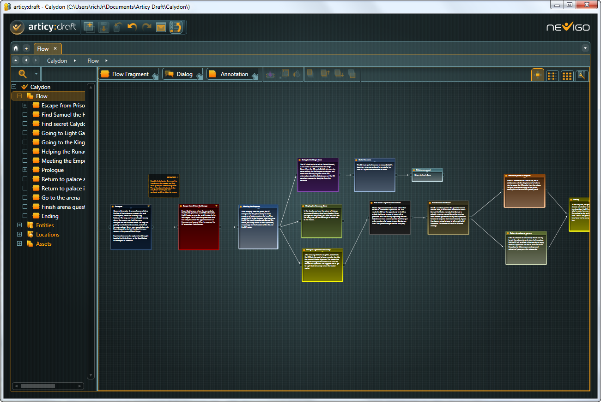
Chat Mapper: Chat Mapper does not provide a storyboard view of story events. The tool is strictly focused on creating content for interactive conversations, and there is no way of displaying a visual diagram showing the structural or sequential relationship between each conversation, either in basic outline or storyboard mode.
DA Toolset: The DA Toolset does not have this ability, as it is focused much more on building levels and areas, and populating those levels and areas with game content that can eventually be converted into an executable game.
Excel: Excel allows users to add shapes to the workbook and create workflows, thus achieving a storyboard-like effect. However, this process is highly manual and time consuming, since Excel is not intended as a workflow editing program. Moreover, the process flow diagram would not have a designated space, but would sit on top of the rows and columns in the spreadsheet.
Ability to create and edit a story outline
articy:draft: The story fragments in articy:draft are automatically stored as items in an “Explorer” view or folder structure. This folder structure can be displayed and edited as if it were an outline.
Chat Mapper: Chat Mapper does not currently have this ability. However, in the Properties panel of a conversation, you can provide information on the Act, Chapter, Scene, and Level for that conversation. Presumably, this automatically organizes your script in an orderly fashion when you export the project to RTF format, though unfortunately I did not have a chance to test this hypothesis.
DA Toolset: The DA Toolset does not currently have this ability. The closest to a story outline you can get in the DA Toolset is a high-level view of the collapsed nodes of the dialogue tree in a conversation.
Excel: Users can create manual outlines in Excel in which each entry is a hyperlink. (See Figure 11.) However, the outline is difficult to maintain. For example, when a new entry is added, it does not inherit any formatting; a hyperlink must be applied to it manually. Also, if the cells that the hyperlinks point to shift when you add or delete a row, the hyperlinks are immediately broken and must be manually updated. Users can go to the Data tab and use Excel’s Outline tool to create automatic outlines, but this feature is designed specifically for Excel tables filled with data and formulas, not lines of text.
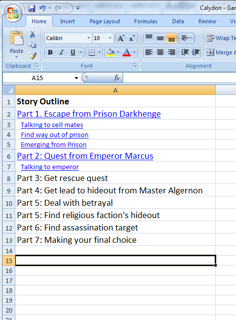
Ability to associate content with a story outline and/or storyboard (e.g., group dialogue under specific parts of the outline)
articy:draft: articy:draft’s Explorer tool provides this functionality. The “outline” is called the “Flow,” which consists of sequential parts. Furthermore, articy:draft gives every line of a conversation a unique ID. The conversation, in turn, is automatically associated with a story fragment. Using the Explorer tool, you can easily associate a conversation with any part of the Flow via drag and drop operations.
Chat Mapper: Chat Mapper does not have this ability.
DA Toolset: The DA Toolset does not have this ability. The writer must create a “conversation” resource, and that resource must be associated with particular “creature” resources.
Excel: Excel allows users to create hyperlinks between cells and thereby manually associate sections of content with an outline. However, maintaining the hyperlinks is very time consuming and cumbersome, and the outline entries cannot be updated automatically. Moreover, with Excel it is not possible to select and rearrange outline entries very easily.
9.2 Branching Dialogue
For quick reference, the table below shows the subjective scores I assigned to each tool in the area of Branching Dialogue. The table is followed by detailed commentary on each tool’s factor or capability.
| Factor or Capability | articy: |
Chat Mapper | DA Toolset | Excel |
|---|---|---|---|---|
| Ability to display your conversations in a tree-like view showing collapsible nodes and branches | 0 | 4 | 4 | 1 |
| Ability to display your conversations in “process flow” view showing nodes and branches (e.g., similar to Visio flow diagrams or decision tree diagrams) | 4 | 4 | 0 | 0 |
| Ability to specify and edit “conditions” for your dialogue (e.g., a dialogue displays or does not display if certain criteria are met, such as possession of an object or completion of a quest) | 3 | 4 | 4 | 2 |
| Ability to specify “outcomes” and “variables” for your dialogue (e.g., when a conversation is finished, the player gets an item or some other event happens) | 3 | 4 | 4 | 1 |
| Ability to simulate (i.e., run a mini play test on) a complex branching conversation you have created | 1 | 4 | 4 | 0 |
Ability to display your conversations in a tree-like view showing collapsible nodes and branches
articy:draft: articy:draft does not currently have this ability. Dialogue is displayed in a "process flow" view, not a "tree" view.
Chat Mapper: Chat Mapper has a tree view of branching dialogue, but not in the same way as the conversation editor in the DA Toolset. In Chat Mapper, each node of dialogue has a box shape, not a series of lines that can be shown or hidden.
DA Toolset: The DA Toolset has a Conversation Editor that displays dialogue in nodes and branches that can be easily expanded and collapsed. Moreover, the tool allows any node to be copied and pasted as a reusable link, thus avoiding manual retyping of the same content in many places. Content can be associated with each node, such as plots, plot flags, variables, voiceovers, and triggers for scripts.
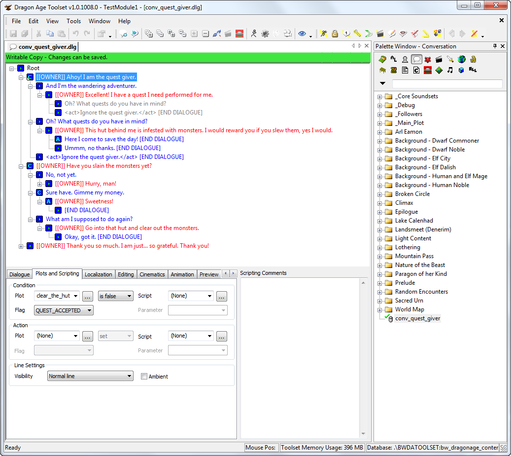
Excel: In Excel it is possible to manually implement a tree-like structure for your dialogue, but such a structure is not nearly as robust as in software applications that are designed for this activity. Because rows and columns need to be frequently added or deleted, it is time-consuming and difficult to maintain a branching structure in Excel as it grows in complexity.
Ability to display your conversations in "process flow" view showing nodes and branches (e.g., similar to Visio flow diagrams or decision tree diagrams)
articy:draft: articy:draft lets you create and display an unlimited number of “dialogue flows” that consist of an unlimited number of interconnected “dialogue fragments” in a process flow view on a canvas. A dialogue flow can be an element within a story flow, but doesn’t have to be. You can use arrows and inbound and outbound pins to connect the fragments, and insert dialogue “hubs” from which multiple branches flow, as well as “return to” hubs that signify the conversation will return to a root node (i.e., the player’s menu of dialogue options). You can write the dialogue directly in the text area of the fragment, and you can drag and drop one or more images onto a given fragment to indicate who is speaking. Each dialogue fragment is resizable, you can zoom in and out using the mouse wheel, and you can easily click and drag the fragments around the canvas. However, dialogue fragments cannot be expanded or collapsed.
Chat Mapper: Chat Mapper’s default display of the branching dialogue is vertical, but you can change this in the preferences to be a horizontal display. Figure 13 displays the default vertical orientation.
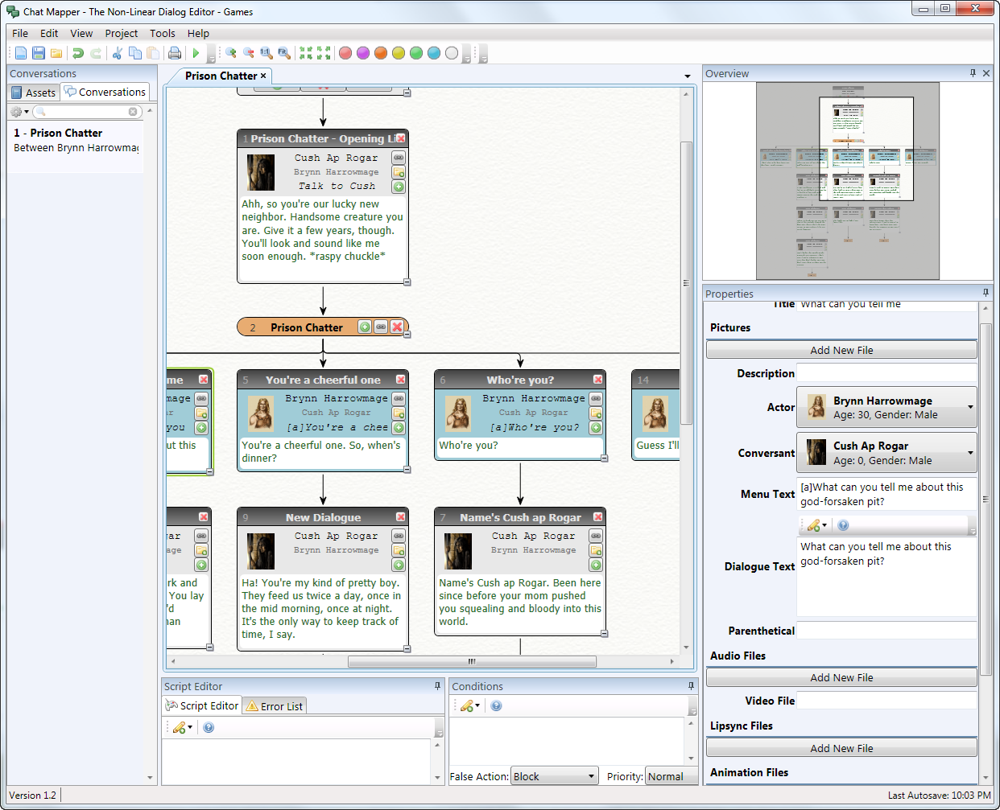
In the Chat Mapper, you can define “parent,” “sibling,” and “child” dialogues, as well as a dialogue “group” from which multiple branches flow. You write the dialogue in a text field of a given dialogue’s properties panel, and you can drag and drop one or more images onto a given fragment to visually signify who is speaking. You can add a “link” between a dialogue and a dialogue group to indicate that the conversation will return to a root node (i.e., the player’s menu of dialogue options). The dialogues cannot be clicked and dragged, but they can be expanded and collapsed. And although the dialogues do not have resize handles, you can go to the Tools > Properties menu to change the size of each dialogue.
DA Toolset: The DA Toolset does not have this ability.
Excel: Excel does not have this ability.
Ability to specify and edit "conditions" for your dialogue (e.g., a dialogue displays or does not display if certain criteria are met, such as possession of an object or completion of a quest)
articy:draft: The dialogue fragments in articy:draft have inbound and outbound "pins" in which you can manually write a condition. (See Figure 14.) However, these pins do not have any programmatic value; you cannot simulate them to see how well they work. They are merely placeholders that explain under what conditions the story or dialogue fragment appears or does not appear. (According to Nevigo’s roadmap, a conversation simulator is planned for implementation.)
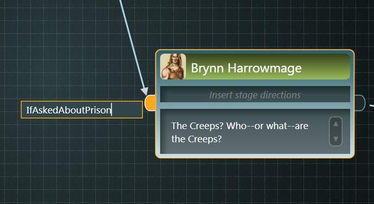
Chat Mapper: Chat Mapper has a Conditions editor that allows you to specify and edit conditions for any given dialogue in your conversation. Simple conditions can be added with a simple click, but other more complex ones must be written using Lua, a scripting language, which some game writers may find intimidating. Lua is a very lightweight language, however, and the designers of Chat Mapper give you guidance on how to use it, as well as some shortcuts for editing it.
DA Toolset: The DA Toolset has a "Plots and Scripting" tab that allows users to set conditions for any line of dialogue. (See Figure 15.) For this feature to work, a "Plot" resource must be created, and each plot must have a series of "Flags." Ultimately, these features allow the user to one or more lines with a particular plot, thus letting one NPC have multiple conversation options depending on which plot is true or false. Furthermore, within a given plot, users can associate a line of dialogue with a particular plot flag, which in turn determines which lines appear or do not appear.
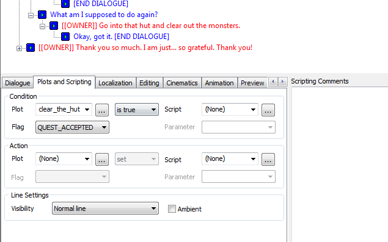
Excel: In Excel, for each line of dialogue, you can insert a column in which to specify conditions and manually type in the conditions when required. Of course, this process is highly manual and not the best visual solution. You might have a large number of empty cells in the column, since not every line of dialogue will require a condition.
Ability to specify "outcomes" and "variables" for your dialogue (e.g., when a conversation is finished, the player gets an item or some other event happens)
articy:draft: The dialogue fragments in articy:draft have inbound and outbound "pins" in which you can manually write a description of an outcome. (See Figure 14.) For example, within the pin you can indicate that completing a certain conversation will result in a new quest or boost the player’s reputation score. However, these pins do not have any programmatic value; you cannot simulate them to see how well they work.
Chat Mapper: Chat Mapper handles this ability through its Scripting Editor, in which you can add simple Lua scripts that can change variables or trigger outcomes. (See Figure 16.) Each script you add is associated with a dialogue node. For example, you can add a script to a dialogue so that when the dialogue is completed, the game system puts an item in a character’s inventory. The potential downside is that writers may be intimidated by scripting. Lua is a very lightweight language, however, and the designers of Chat Mapper give you guidance on how to use it, as well as some shortcuts for editing it.
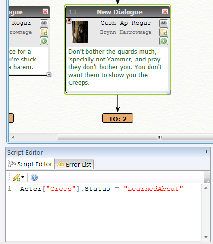
DA Toolset: The DA Toolset has a "Plots and Scripting" tab in the Conversation Editor, as well as the ability to create what are called “Plot” resources. (See above.) Through these tools, you can create variables and trigger actions or events to occur when a line of dialogue is spoken. For example, you can create a plot that has a series of “flags,” such as “quest_accepted,” “monsters_slain,” or “quest_completed.” (These are flags that one of the DA Toolset tutorials suggests.) Then, in a given conversation, you can specify that a certain line of dialogue sets one of those flags. The terminology can be confusing, but the functionality is quite robust, allowing you to create your dialogue such that it causes a variety of outcomes to occur in relation to a particular quest.
Excel: In Excel, you can specify outcomes by creating an “Outcomes” column, and then manually type in an outcome for a specific line of dialogue. Of course, this process is highly manual and not the best visual solution. For example, you might have a large number of empty cells in the column, since not every line of dialogue will require an outcome.
Ability to simulate (i.e., run a mini play test on) a complex branching conversation you have created
articy:draft: articy:draft does not currently have this ability. However, according to the Feature list / Roadmap on Nevigo’s forum, this feature will soon be implemented as an “Interactive presentation mode” that will allow users to simulate the flow of their branching conversations.
Chat Mapper: Chat Mapper comes with a full-fledged Conversation Simulator, which lets you see a mockup or prototype of the interactive conversation you have created. The simulator interface includes panels for you to track how variables, relationship values, and/or other elements of the conversation which you defined are executed, and whether any errors occurred.
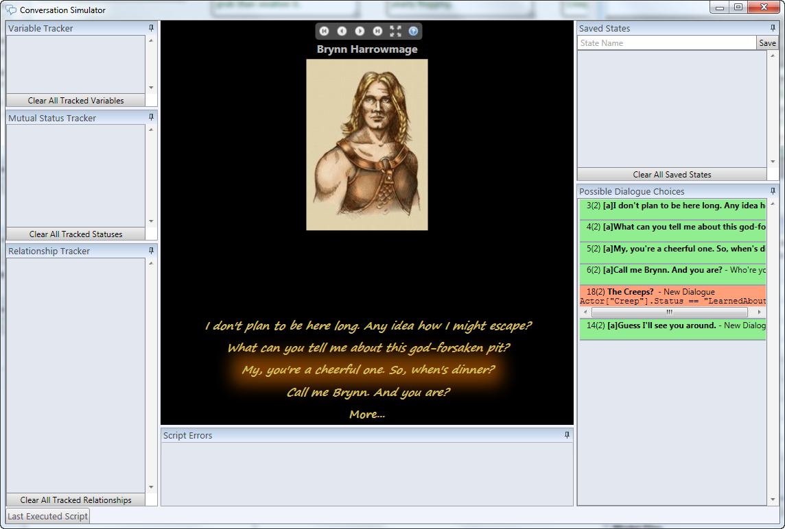
DA Toolset: The DA Toolset has a "Preview Line" tool that allows users to see how a line of dialogue will be visualized, spoken, and animated by an NPC. In addition, users can export their module, open it up via the Dragon Age: Origins launch screen, and play test the conversation they have created. However, there a number of requisite steps you must take first. For instance, you must create the area, the characters, the items, the gestures, and a range of other resources before the conversation can be loaded and playtested. In other words, several hours of set up work will be required before the preview line can be seen.
Excel: Excel does not have this ability.
9.3 Character design
For quick reference, the table below shows the subjective scores I assigned to each tool in the area of Character Design. The table is followed by detailed commentary on each tool’s factor or capability.
| Factor or Capability | articy: |
Chat Mapper | DA Toolset | Excel |
|---|---|---|---|---|
| Ability to import character concept art (e.g., portraits, sketches, etc.) and associate them with dialogue snippets and/or character sheets | 4 | 4 | 2 | 2 |
| Ability to select and fill out predefined character sheets, and then easily display and cross reference those sheets while writing dialogue | 4 | 4 | 2 | 2 |
| Ability to add custom fields to the predefined character sheets if the default fields aren’t enough. | 1 | 3 | 0 | 2 |
Ability to import character concept art (e.g., portraits, sketches, etc.) and associate them with dialogue snippets and/or character sheets
articy:draft: articy:draft has an “Assets” section that, by default, contains folders for Characters, Environments, Items/Objects, and Miscellaneous. Within the Assets section, you can click an Import Assets button to retrieve graphics and other media stored on your computer. These graphics, in turn, can be fluidly dragged and dropped onto character sheets, dialogue fragments, and other objects.
Chat Mapper: For every asset in Chat Mapper, you can select a picture using the asset’s Pictures property. However, you cannot import a set of pictures all at once (you can only add pictures one at a time), and you cannot drag and drop images onto character sheets.
DA Toolset: The DA Toolset does not allow you to show character portraits for conversant in a script, but it does allows you to create what are called “Creature resources”—3D models for major characters, minor characters, and monsters that you can place within a level. For each creature resource, you must select a 3D model to define the look of the creature, and you have access to a range of appearance properties. However, the meaning of a character’s properties is not intuitive; extensive documentation is essential to understanding each field.
Excel: Excel partially has this ability. When you insert a picture into a workbook, it does not technically get inserted into an individual cell. However, a picture will usually behave as though it sits in a cell. For example, if you insert a row above the cell where the picture is, the picture will shift down and stay in the cell you have inserted it. You will run into difficulties, though, if your character sheets are formatted as rows and you wish to filter the rows. In such cases, the pictures will overlap.
Ability to select and fill out predefined character sheets, and then easily display and cross reference those sheets while writing dialogue
articy:draft: articy:draft has an Entity Editor for filling out character profiles. (See Figure 18.) The editor allows you to create a character sheet based on predefined templates (Major and Minor NPC templates), and fill in standard fields, such as Description, Motivation, Inner Conflict, Appearance, and more. If you update the character’s name, the update will cascade to any resource where the name is referenced. You can also easily drag and drop art assets (such as character portraits) from your folders into the Entity Editor, and you can display the character sheet for easy cross referencing as you write.
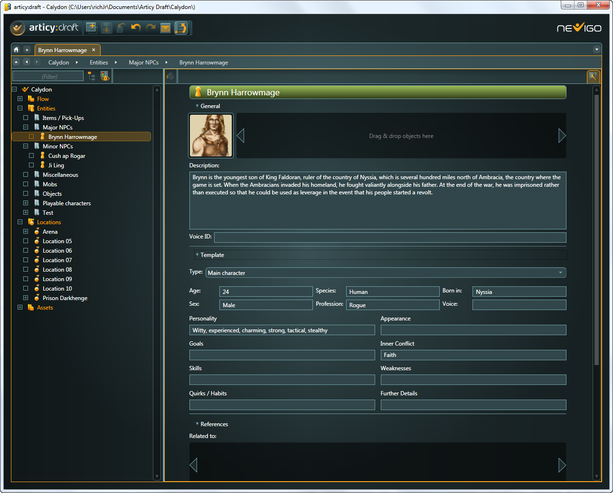
Chat Mapper: Chat Mapper has an Actors panel through which you can create new “Actors” and display each actor’s “sheet” or properties in a side panel for easy cross referencing. You can specify properties such as Name, Gender, Description, Class, and Rank. You can also select images, models, and sound files for the actor. If you update any of the actor’s information, the update will cascade to any place where the actor is referenced.
DA Toolset: The DA Toolset allows you to quickly find and open a character’s properties from the Resource Palette. It is important to remember, however, that this is not the same thing as creating a character sheet. The focus of a DA Toolset is on creating character models and placing them in a level so they can be tested and eventually compiled as part of a game. The purpose is not to record story information about the character. So although you can open a character’s properties and use the Name, Comments, and Description fields to describe what he or she is like, these fields are the only fields available for recording character background information.
Excel: Excel does not come with predefined character sheets, but such sheets can be easily created from scratch. (See Figure 19.) Free character templates in Excel format can be found online and downloaded, or you can pick up a creative writing guide and determine what categories of information to include in your sheet. (The categories will of course depend on your unique project needs as well.) In general, the drawback with character sheets in Excel is that they are not built-in, and they can be a hassle to maintain. Perhaps the best approach is to organize each character’s worksheet as a row in a table with standard columns, because you can then filter the rows based on a given column. Of course, this approach will become difficult t work with if you have a long list of characters.
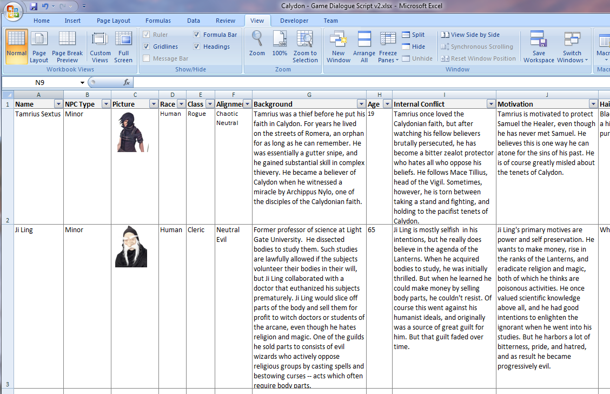
Ability to add custom fields to the predefined character sheets if default fields aren't enough.
articy:draft: The beta version of articy:draft does not have this feature. However, according to the Feature list / Roadmap on Nevigo’s forum, this feature will soon be implemented.
Chat Mapper: You can add custom fields to a character sheet using Chat Mapper’s Project Settings tool. (See Figure 20.) With this tool, you can add “Custom Asset Fields” to any one of your assets, whether a character, item, or location. You can even specify values for the custom fields, which can be referenced in the scripts or conditions you add to your conversations.
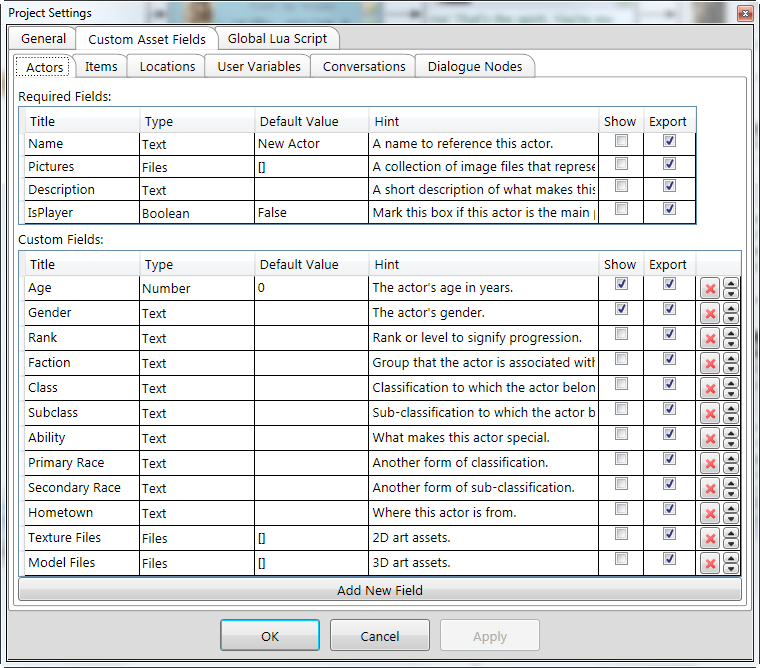
DA Toolset: To the best of my knowledge, the DA Toolset does not have this ability.
Excel: In Excel, it is easy to add custom fields to a character sheet by adding more rows and/or columns. However, depending on how your spreadsheet is set up, adding a new row or column can cause to a lot of manual work. The critical task is to ensure you only have to add a new field once rather than many times. This is easy to do if your character sheets are rows in a table that share the same columns. A different arrangement will probably lead to more effort when you need to edit the fields.
9.4 Assets, Locations, and Integration
For quick reference, the table below shows the subjective scores I assigned to each tool in the area of Assets, Locations, and Integration. The table is followed by detailed commentary on each tool’s factor or capability.
| Factor or Capability | articy: |
Chat Mapper | DA Toolset | Excel |
|---|---|---|---|---|
| Ability to fill out and reference “location” sheets that describe the levels and environments in your story | 4 | 3 | 0 | 2 |
| Ability to import “location” assets (e.g., concept art, maps, level layouts) so they can be referenced while creating your story | 4 | 2 | 0 | 2 |
| Ability to export project files to XML format | 3 | 3 | 2 | 2 |
| Ability to export script to a standard document format, such as a script format for voice actors | 1 | 4 | 1 | 2 |
| Ability to integrate script seamlessly in a proprietary game engine | 1 | 1 | 1 | 1 |
| Accessible API or SDK for user-created modifications and extensions / integration within other game technologies | 4 | 0 | 1 | 1 |
| Ability to display maps and indicate the locations or “patrol routes” of NPCs | 4 | 3 | 0 | 2 |
Ability to fill out and reference “location” sheets that describe the levels and environments in your story
articy:draft: articy:draft has a Locations Editor that allows you to create new locations and drag and drop images on a canvas. The Locations Editor comes with drawing tools and a list of properties for each location you create, including a Description field. There is currently no ability to add custom property fields (or edit existing fields) for a location.
Chat Mapper: In Chat Mapper you can create Location assets, each of which comes with predefined asset fields such as Description, Act, Scene, Climate, Purpose, and Mood. You can associate texture and model files with the Location asset. If necessary, you can also define custom fields for a Location.
DA Toolset: The DA Toolset has a full-fledged Area Editor and Level Editor, both of which have extensive tools and capabilities for developing interactive environments. However, these editors were created with designers, developers, and programmers in mind, not writers. They are not intended as reference sheets containing story information about the game.
Excel: Excel does not come with predefined location sheets, but with time and effort, such sheets can be easily created from scratch. The drawbacks are that these sheets are not built-in, are not easy to maintain, and are somewhat difficult to organize and navigate. In a Word document, it is easy to create a section and link to that section from the table of contents, but Excel has no equivalent to this.
Ability to import “location” assets (e.g., concept art, maps, level layouts) so they can be referenced while creating your story
articy:draft: articy:draft has an Assets section through which images of maps and level layouts can be imported, stored, shown and hidden, and easily cross-referenced in a side panel as you are creating your story. You can also drag and drop the assets into other editors in a fluid and intuitive fashion.
Chat Mapper: Chat Mapper does not have this ability.
DA Toolset: The DA Toolset allows users to create as well as open and import location assets into the authoring environment, such as 3D models of area and level layouts. These can be opened as tabs that appear at the top of the toolset’s main editing window for easy cross-referencing while you create your story, although you cannot have too many tabs open before toggling becomes unwieldy. Also, if you have custom layouts that you wish to import and display, they must be converted to an appropriate file format that the DA Toolset can recognize, and before you import them, they must be stored in the appropriate subdirectories. The tool does allow you to use pre-existing areas and levels, or create and edit new ones, but the learning curve for this is high.
Excel: Excel allows you to insert images into a workbook, but once you insert the image, you have limited control over how you can display it in other places in the workbook. For example, you cannot store the image in a side panel, and then show and hide the panel for rapid cross referencing.
Ability to export project files to XML format
articy:draft: articy:draft has an Export Project tool that lets you export all the data of your project to an XML file. A developer or programmer must then create an import process to load the XML data in a game engine.
Chat Mapper: Chat Mapper has an Export Project as XML tool that is only accessible to Indie and Commercial license holders. This tool generates an XML file of all your Chat Mapper project data.
DA Toolset: The DA Toolset partially has this ability with the Builder to Builder Create feature, wherein builders of a module can export database resources to XML files, which are then packaged into a single archive file that can be shared. However, from the available documentation it is not clear how well this feature would work if you wish to extract the XML files and integrate them into a game engine other than the DA Toolset. (Source: http://social.bioware.com/wiki/datoolset/index.php/Builder_to_builder.) Theoretically, the DA Toolset can also import XML files from another software tool such as articy:draft, Chat Mapper, Microsoft Excel, or Microsoft Word. However, this is a highly technical process that would require someone with a database and/or programming background to load the data into the game engine.
Excel: In Excel, you can go to the Developer tab (this tab does not appear by default; you must manually display it) and use Export XML Data. However, for this to work, you must go through a relatively complex process that involves adding an XML schema to the workbook and mapping the schema’s elements to individual cells. The learning curve will be high for users unfamiliar with XML.
Ability to export script to a standard document format, such as a script format for voice actors
articy:draft: The beta version of articy:draft does not currently have this ability. However, according to the Feature list / Roadmap on Nevigo’s forum (http://www.nevigo.com/forum/), this feature will soon be implemented.
Chat Mapper: Chat Mapper has an Export Screenplay to RTF feature, which displays the contents of your script in a screenplay format that conforms to industry standards. This feature requires a $20 Indie license.
DA Toolset: The DA Toolset does not have any features for exporting dialogue to a standard document format. However, there is a manual workaround process for exporting lines of dialogue using SQL queries. The solutions requires you to install Microsoft SQL Server Management Studio Express and generate the queries on your own. You can then select the results of your query, save your selection as CSV file, and reopen it with Excel. The DA Toolset wiki has a tutorial for this process.
Excel: Excel does not allow you to export your spreadsheet content to a traditional screenplay document format for voice actors. You can, however, copy and paste cell data to a Word or HTML document, and thus achieve a manual export solution. You can also easily save Excel data in CSV and HTML formats. But this may not be necessary, since it is not uncommon for video game voice actors to read spreadsheets (Stuart 2010).
Ability to integrate a script seamlessly in a proprietary game engine
articy:draft: articy:draft partially supports this ability with its Export Project feature, which generates an XML file of your project data. However, you must still create a process for loading the XML data into a game engine’s database or file directory.
Chat Mapper: Chat Mapper partially supports this ability with its Export as XML Feature, as well as its Exporter Development API. Using the Export as XML feature, you would ultimately need to create a process for loading the XML file you generate into a game engine’s database or file directory. Using the Exporter Development API (which is only available to Commercial license holders), you must use the API to create an appropriate exporter for loading your project data into a game engine’s database.
DA Toolset: From what I could understand from the available documentation on the DA Toolset’s wiki, if you want to import a game writing script into the DA Toolset, it must (a) be in XML format, and (b) you must know how to load the data into the toolset’s database and/or appropriate file directories.
Excel: Excel partially supports this ability with its Export XML Data feature, which generates an XML file. However, you must still create a process for loading the XML data into a game engine’s database or file directory.
Ability to display maps and indicate the locations and/or "patrol routes" of NPCs
articy:draft: Using the Locations section in articy:draft, you can display maps and use the built-in drawing tools to indicate the locations and/or patrol routes of NPCs.
Chat Mapper: Chat Mapper does not have this ability.
DA Toolset: The DA Toolset allows you to create, edit, and display levels and areas, and to add creatures, items, and buildings to them. You can also identify patrol routes for NPCs, and create and display a map of the area through which the character moves. However, the learning curve for these features is very high, as it involves learning a wide range of features in the DA Toolset.
Excel: Excel allows users to insert images and then annotate the images with its built-in shapes and drawing tools. However, it can become very difficult to organize and manage all of this content in one workbook. You could create separate tabs to contain the location graphics, but the more tabs you add, the harder it gets to toggle between them. Depending on the scope of your game story, it might be better to create a separate workbook devoted to containing text and graphics about locations. But then you need to toggle between separate open documents, and you would not have a truly integrated authoring environment.
9.5 Usability and User Interface
For quick reference, the table below shows the subjective scores I assigned to each tool in the area of Usability and User Interface. The table is followed by detailed commentary on each tool’s factor or capability.
| Factor or Capability | articy: |
Chat Mapper | DA Toolset | Excel |
|---|---|---|---|---|
| The tool’s user interface is visually appealing | 4 | 2 | 2 | 3 |
| The tool’s user interface is user-friendly and intuitive | 4 | 2 | 1 | 4 |
| The tool requires little to no knowledge of coding, scripting, or programming | 4 | 2 | 1 | 4 |
| The tool’s user interface lets me display different panels of information side-by-side for easy cross-referencing | 4 | 4 | 4 | 4 |
| The user interface is highly-customizable – e.g., I can show, hide, and/or resize panels of information very easily | 3 | 3 | 3 | 3 |
| The tool has keyboard shortcuts that make navigating the user interface easy | 4 | 2 | 2 | 3 |
The tool's user interface is visually appealing
articy:draft: articy:draft has a modern, sleek visual aesthetic that is akin to the simplicity and subtlety of an Apple product. The contrast between dark turquoise and bright orange not only carries Nevigo’s brand, but effectively partitions the interface and clearly differentiates the shapes, panels, and menus. The story and dialogue fragments you can insert are not mere solid-colored objects; they have shadows and lighting effects to give them depth and interest. The interface invites you to engage and begin crafting stories.
Chat Mapper: Chat Mapper has a clean but utilitarian visual aesthetic. Most of the interface consists of solid colors or conventional color schemes of white, beige, and black.
DA Toolset: Some of the DA Toolset interface is visually appealing, such as the ability to view an area in high-definition 3D. However, most of the UI is neutral or utilitarian. The colors, icons, and menus are reminiscent of the color scheme of classic Microsoft desktop programs, such as Word or Excel 97. Furthermore, the properties panels remind one of older versions of Excel spreadsheets.
Excel: Excel 2007 has much greater visual appeal than its earlier versions, partly due to the design of the slender Office Ribbon, the sleek set of toolbars and tabs along the top of the program. There is also a more refined combination of shadings, gradients, and lighting effects when you hover your mouse pointer over buttons, tabs, toolbars, menus, and icons. Previous versions of the tool had a more pixilated and less sophisticated interface design and color usage.
The tool's user interface is user friendly and intuitive
articy:draft: The articy:draft user interface is for the most very intuitive. Adding story fragments and dialogue fragments to the canvas is simple, as is connecting them with arrows, changing their colors, and inserting conversation hubs. You can zoom in and out with your mouse, and navigate the canvas by right-clicking your mouse and dragging (similar to how you can navigate Google Maps). I think the UI could be improved, however, by providing context-sensitive help for the tools and buttons on the toolbar. And I did have trouble understanding how to use the drawing tools in the Locations editor.
Chat Mapper: Chat Mapper’s interface is not cluttered with menu items, and the property fields for most of the assets have well-written, understandable tooltips. Also, there are many familiar icons and UI metaphors that users of personal computers will recognize. At the same time, Chat Mapper may cause significant confusion. Key features of the program—such as the Script and Conditions Editors, the Project Settings, the Simulator, and even the main workspace—are not easy to grasp immediately, especially if you do not have a background in programming. Perhaps most significantly of all, when you create a new interactive conversation, you are presented with a properties box with ambiguous data fields. You will probably need to watch a tutorial or consult the help system before you understand even the basics of how the conversation flow tool works.
DA Toolset: The DA Toolset user interface is not intuitive. There is a dizzying array of buttons, menu items, and data fields, and it is very difficult to understand what each one means. Reference material and documentation are absolutely necessary. The interface may be somewhat intuitive to users of previous BioWare toolsets (such as the Aurora Toolset), but it is complex if you are a beginner.
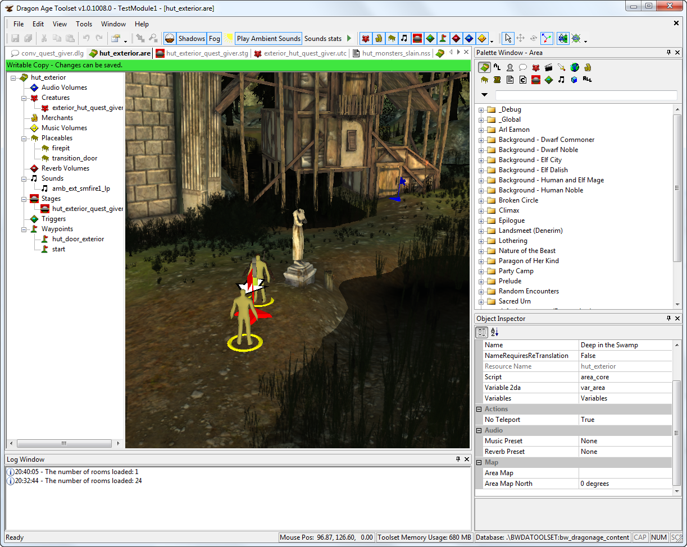
Excel: The Excel 2007 and 2010 UI is more intuitive than its predecessors. Every tool or button in the Ribbon has a sleek, context-sensitive tooltip that explains its purpose. Navigating and understanding the menu items and commands is the same as in Word 2007, and there is plenty of context-sensitive help and in-application help to guide you along the way. If you are new to Excel, sometimes it is difficult to understand how rows and cells can be edited (e.g., adding hard returns in a cell is not immediately clear, and the shortcuts for resizing and formatting a cells are not very intuitive). But if you are familiar with Microsoft Word 2007 (and the average writer usually is), the learning curve will not be high.
The tool requires little to no knowledge of coding, scripting, or programming
articy:draft: articy:draft does not require any knowledge of coding, scripting, or programming. The only feature that will require some programming knowledge is the Export Project feature, which generates an XML file of your project data. Also, if you get a multi-user license and wish to use articy:server for web-based collaboration, you will need to learn about the basics of network administration and source control repositories (for example, you will need to know what a server port number is, and database concepts such as branching and merging). While such knowledge does not involve programming or coding, it may easily be daunting if you do not have experience in those areas.
Chat Mapper: Chat Mapper requires a small amount of programming knowledge if you want to implement conditions. You will have a head start if you already know the basic concepts behind variables, methods, and Boolean logic. Indeed, the most satisfying part of the tool—being able to simulate your branching dialogue—is not satisfying at all unless you can create sophisticated conversations in the first place. Such conversations are impossible in Chat Mapper unless you add scripts and variables using the tool’s built-in coding editor. Most of the programming tasks are basic, however, and there are video tutorials to follow.
DA Toolset: For basic writing tasks (such as developing branches and nodes, or setting conditions, scripts, and plots), the DA Toolset does not require programming knowledge. However, knowledge of coding and scripting will be necessary for more sophisticated writing tasks. For example, you may want to set a condition in your dialogue so that a line displays only if a group of monsters is destroyed. (See Figure 22.) In programming terms, you will need to create an “event” using a programmatic script, and you will not be able to test whether the condition works until the script is implemented successfully.
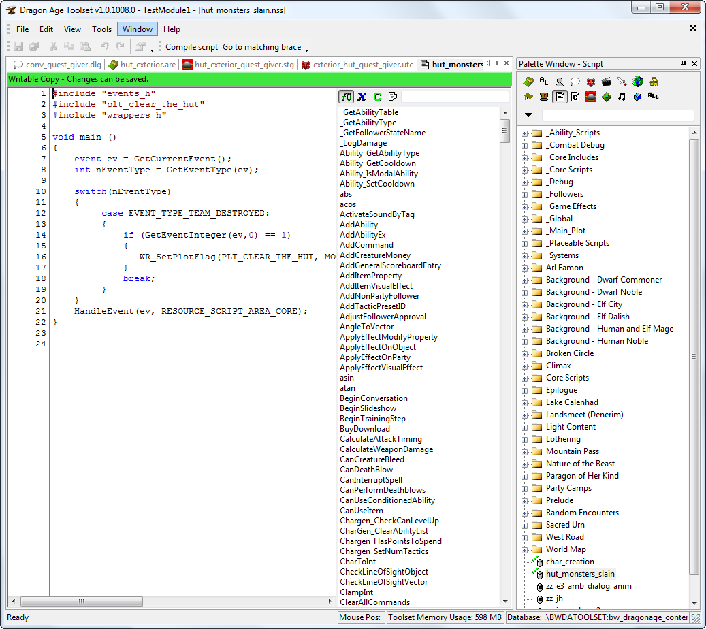
Excel: Excel does not require any knowledge of programming to perform basic to complex writing tasks. If anything, you may need to understand some rudimentary database concepts (such as how to create standard lists of values), but you can do a lot in Excel without such knowledge. However, if you want to export your spreadsheet to XML so it can be loaded into a proprietary game engine, you may need to get some technical knowledge about what XML is and how it works.
The tool's user interface lets me display different panels of information side-by-side for easy cross-referencing
articy:draft: articy:draft has a wide range of flexible viewing options for opening, resizing, and closing panels for easy cross-referencing. For example, you can hover your mouse over any one of the four edges of the screen to display “handles” that allow you to click and drag a panel or a window into view. It is very easy to arrange and resize the interface to suit your personal viewing preferences.
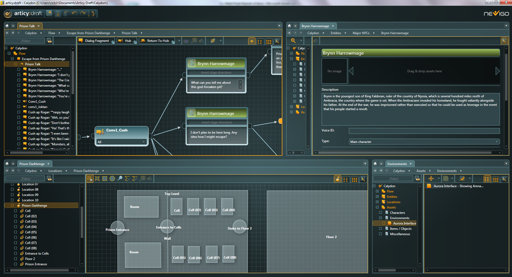
Chat Mapper: Chat Mapper has a variety of predefined panels for easy cross-referencing, from the Asset browser to the Conditions editor to the main workspace to the Overview panel.
DA Toolset: The DA Toolset gives you numerous options for displaying and resizing relevant panels side by side (or one on top of the other). However, there is a limitation with one of the most important windows in the toolset: the Resource Palette, the main interface for finding and opening designer resources to be edited. In this palette, there are multiple “views” of resources (such as Conversations, Items, Maps, Plots, etc.), but it is not possible to have more than one view open at the same time. I found this a very time-consuming limitation.
Excel: Excel has a range of viewing options for displaying panels of information. However, unlike all the other tools in my evaluation, Excel was not specifically designed for game writing or design, and so its panels are not designed to display game-related resources such as character sheets, assets, or locations. Consequently, not many of Excel’s panels will be useful to game writers who want to cross reference pictures, location sheets, or story information. Probably the next best option is to store such information in Excel’s worksheets, which are tabbed along the bottom of the screen, but this method can become unwieldy if you have a large amount of information.
The user interface is highly customizable—e.g., I can show, hide, and/or resize panels of information very easily
articy:draft: With articy:draft it’s easy to open and resize various panels, editors, and windows for rapid cross referencing. All panels, including the main window, can be opened from the top, bottom, left, or right, and you can adapt the display to your viewing style. One possible drawback is that none of the panels can be undocked, but I did not find this to be a hindrance. Another possible drawback is that the labels and tooltips for the UI elements are not always as clear as they could be, and consequently, you may not know what the effect of your customizing action will be. Other customizable features of the UI include: (a) changing the images in your story and dialogue fragments; (b) changing the positioning and stacking order of the story flows and conversation branches on the canvas; and (c) changing the background colors of each story or dialogue fragment. All of these tasks are incredibly easy and intuitive in articy:draft, giving it the feel of a flexible and accommodating program.
Chat Mapper: Chat Mapper lets you configure and drag around each tabbed window element of the interface to create a layout that supports easy cross referencing. (See Figure 24.) When you drag a tab or a panel, a preview is displayed of where the window will be docked. You can also easily resize, hide, or display each window.
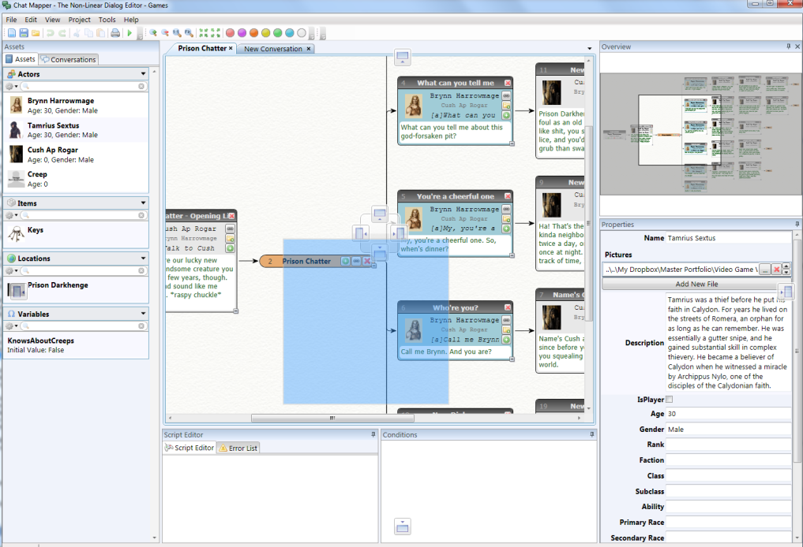
DA Toolset: The DA Toolset allows users to click, drag, and resize the borders of most (if not all) palettes, editors, and windows. You can also add and remove buttons to the toolbars, dock and undock panels and palettes, and rearrange them to suit your viewing preferences. The difficulty, of course, is knowing what each button, toolbar, and palette means before you decide where and how to move or customize it. The labels and tooltips in the DA Toolset’s UI elements are not intuitive to beginner-level users.
Excel: The labels and tooltips that Excel uses for its UI are generally clear and well written, and there are plenty of intuitive options for opening, closing, docking, undocking, and resizing panels and windows for rapid cross-referencing. However, none of the panels are designed to display game-related content such as character sheets, maps, location sheets, or art assets, and so they are of limited use to game writers. Perhaps the most important customizable features of Excel are the cells. These are very easy to resize, reorder, and format according to your game writing needs.
9.6 Cost, Learning, and Support
For quick reference, the table below shows the subjective scores I assigned to each tool in the area of Cost, Learning, and Support. The table is followed by detailed commentary on each tool’s factor or capability.
| Factor or Capability | articy: |
Chat Mapper | DA Toolset | Excel |
|---|---|---|---|---|
| The tool is supported by an active and responsive service desk and/or online help forum | 4 | 2 | 3 | 4 |
| The tool has a detailed help system embedded in the application or accessible online | 0 | 2 | 3 | 4 |
| The tool has video tutorials, Getting Started guides, and other information resources freely available | 4 | 4 | 4 | 4 |
| The tool’s learning curve is low | 4 | 2 | 0 | 4 |
| The tool has competitive pricing options for both individual and multi-user licenses | TBD | 4 | 2 | 3 |
The tool is supported by an active and responsive service desk and/or online help forum
articy:draft: articy:draft has an active service desk which you can e-mail at support@nevigo.com. Also, Nevigo recently established an articy:draft forum online at http://www.nevigo.com/forum/index.php. Since the forum is so new, it is difficult to tell how responsive it is (as of this report’s writing, there were not enough forum discussions to gauge the overall responsiveness). Speaking from experience, however, the Nevigo team replied immediately to my questions on the forum, and their support group has been very responsive to my e-mail requests for help.
Chat Mapper: Urban Brain Studios (the developer of Chat Mapper) does have a Help Desk at support.urbanbrainstudios.com/home where you can submit and track tickets. There is also a tab for “Solutions” and FAQs, but the information is scant, and there are no dates indicating how up-to-date the information is. The online forum is currently closed.
DA Toolset: The DA Toolset does not have an official help desk, but there is an active online forum (http://social.bioware.com/forum/1/subindex/70) where you can get answers to questions from other users of the toolset, as well as links to useful articles and tutorials. There are thousands of posts, though, so it can be frustrating trying to find a topic material that you suspect has been written. Still, the community is active, and I found valuable resources and answers to my questions.
Excel: To get support for Microsoft products such as Excel 2007, you can go to Microsoft’s support Web site at http://support.microsoft.com, where you can find contact information for the service desk appropriate to your product. If you have Excel 2010, support will be free, but if you have Excel 2007 it may not be free, depending on which support option you select. If you do not wish to use the service desk, you can go straight to the Excel online help forum at http://answers.microsoft.com/en-us/office/forum/excel. As is to be expected, you will not be able to create a forum topic without signing in. (The same goes for the articy:draft and DA Toolset forums.) The forum is quite active, though, and you should be able to get an answer to your question quickly.
The tool has a detailed help system embedded in the application or accessible online
articy:draft: articy:draft does not have an in-application help system like Microsoft Excel does, and this is frustrating when you need a quick answer or guidance on a small but important task. As of this report’s writing, the only available help content is in PDF Getting Started guides. There are also some video tutorials, but they explain basic tasks and do not teach advanced techniques on how to use the tool. It is encouraging, however, that one of the main topics currently on the Nevigo forum is how the Nevigo team should deliver help content to its customers.
Chat Mapper: Chat Mapper has an in-application help system that covers the basics of the program’s tools and interface. You can also access context-sensitive help in certain panels of the interface. (See Figure 25.) The content is consistent and clear, and includes clarifying screenshots and definitions of terms used in the interface. However, the help is far from exhaustive. There are no numbered instructions, and the documentation on conditions, scripts, and variables is minimal and describes what the features are and not how to use them.
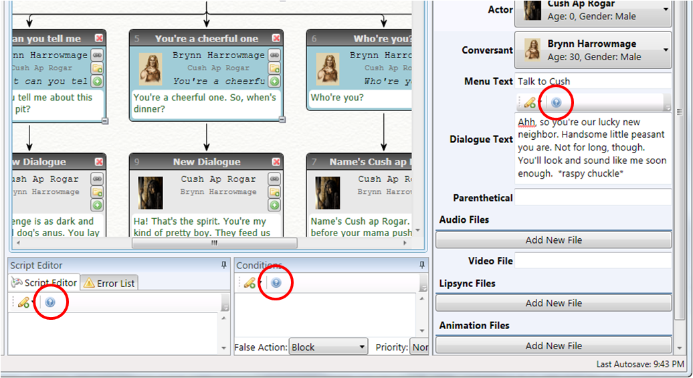
DA Toolset: The DA Toolset has a detailed wiki containing walkthroughs, reference information, screenshots, and links to video tutorials. However, the topics are not written and organized consistently, and the structure of the wiki is confusing. Even though there is a “home page,” there is no comprehensive outline or index of topics. Consequently, it is easy to completely miss wiki articles that exist but that don’t appear on the home page. The search engine is helpful, but only if you know what terms to use. The tutorials that do exist are written in paragraph form and seldom contain numbered steps. As a result, on numerous occasions I missed critical information buried in the middle of a paragraph, and I wasted valuable time trying to troubleshoot problems I encountered. There is also a severe lack of consistency in the terms that different contributors use in the tutorials, leading to a great deal of confusion if you are a new to the software. Many of the articles are also outdated, and so are the screenshots.
Excel: Excel has an extensive in-application help system (see Figure 27), context-sensitive help topics, and useful tooltips for most of the buttons, tools, and menus in the user interface. The help system does not require Internet access, and it contains everything from quick references to video demos. The topics are well written and organized. The only drawback is the large volume of content, which can sometimes be difficult to search and browse.
The tool has video tutorials, Getting Started guides, and other information resources freely available
articy:draft: As of this report’s writing, articy:draft has seven video tutorials, Getting Started guides for single- and multi-user licenses, and a quick reference guide on setting up articy:server. All in all, this documentation covers the basics, but leaves much to be desired. For instance, in terms of quickly finding the right information, there is a high-level outline in the Getting Started guides, but there is no search engine and no exhaustive list of links to help topics, or subcategories to help you browse the information. Moreover, sometimes there is just a general lack of detail. For example, the tooltips for the various buttons and menus could be expanded upon, and there is no explanation on how to use the project XML file you can export. So while beginners should have enough information to get started, there is not documentation on how to become an advanced user, nor is there a way to give feedback on how helpful the documentation is.
Chat Mapper: Chat Mapper does not have any Getting Started guides, but it does come with helpful online video tutorials (in addition to its in-application help). The tutorials provide much-needed guidance for tasks like developing your first conversation and creating conditions, scripts, custom asset fields, and variables. However, there are only four tutorials in total, which is far too few if you want to become an intermediate or expert user of the software. Also, the authors still use technical jargon at significant points in the video tutorials, assuming their audience will know basic programming concepts.
DA Toolset: The DA Toolset has a range of video tutorials created by fans of the game, and there are wiki articles for downloading and installing the software, as well as doing a wide range of common tasks. (See Figure 26.) However, the quality of the tutorials and wiki articles varies widely. None of the video tutorials are made by professionals employed by BioWare, and as such, they are disjointed and many times the authors skim over important steps or assume too much prior knowledge. Moreover, much of the content on the DA Toolset wiki is not well written or well organized.
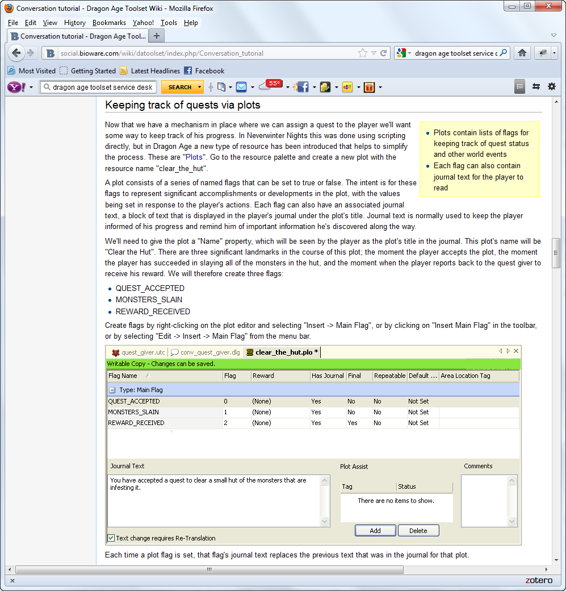
Excel: As mentioned above under “The tool has a detailed help system embedded in the application or accessible online,” Excel has useful an extensive help system with quick reference help topics and video demos. In addition, you can access a wide range of free high-quality trainings and video tutorials online at http://office.microsoft.com/en-us/excel-help/CH010369467.aspx. The content is high quality and is made and maintained by experts in creating user assistance materials.
The tool's learning curve is low
articy:draft: Even though I think articy:draft’s documentation lacking in detail, I found the overall learning curve of articy:draft is low. You do not need any programming knowledge, and the two most important parts of the software—creating complex story flows and branching conversations—are very easy to do, and even a little fun. Probably the most difficult task is setting up articy:server, a process with a high learning curve if you do not have a background in server software and/or systems administration.
Chat Mapper: The learning curve for Chat Mapping is intermediate, primarily because of the effort required to understand how conditions, variables, scripts, and custom affects fields work. In addition, the behavior of the dialogue tree is not simple to grasp at first, and it is absolutely necessary to watch all of the video tutorials in their entirety to understand how advanced features of Chat Mapper work, such as the conversation simulator, scripts, variables, and conditions.
DA Toolset: The learning curve for the DA Toolset is very high. The UI is not intuitive, and when you create or insert resources into a new module, many of the file names and data fields are esoteric. A good amount of reading, searching online, and guesswork will be involved for beginners. To create as well as test a sophisticated module, you will need to use some scripting, which will entail a high learning curve if you are a game writer who has no background in programming. Moreover, the video tutorials and wiki documentation are disjointed and vary widely in terms of quality. Although there is an online forum for the toolset, there is no guarantee you will get high quality answers to your questions, and it can take time to search forum topics to see if an answer already exists.
Excel: Excel has a low learning curve, especially if you use other Microsoft Office tools that have similar buttons and menus. Excel is a mature tool with an intuitive interface, extensive help content (see Figure 27), and an active support community. Even if you are new to the software, you can become proficient in it relatively quickly in order to perform complex game writing tasks.
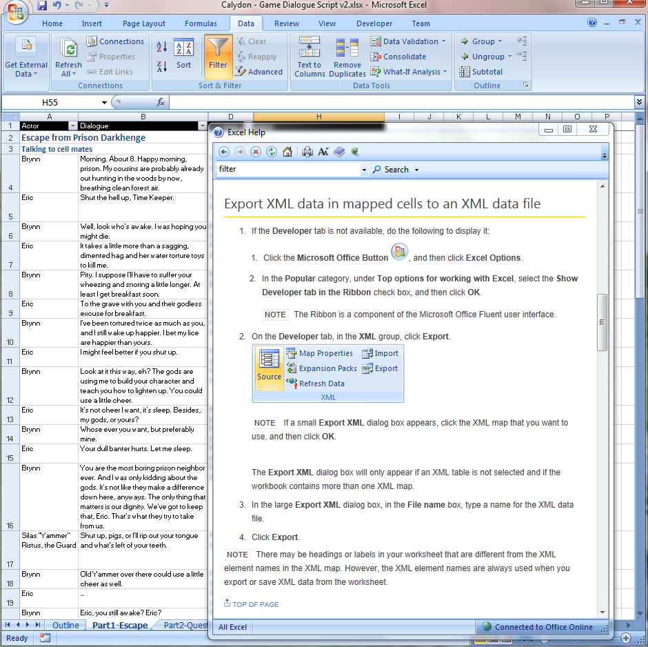
The tool has competitive pricing options for both individual and multi-user licenses
For a comparison of each tool’s price, see Section 5.2, “Cost Comparison.” At the time of writing this report, articy:draft had not been released to the public, so it was not possible for me to score this factor. After the evaluation was complete, however, I gained initial information about the potential price of articy:draft. The DA Toolset does not require individual or multi-user licenses per se. A copy of the toolset can be downloaded online so long as you have a software key for Dragon Age: Origins. In short, the cost of the DA Toolset will be whatever you paid for a copy of DA:O. Excel 2007 or 2010 is usually installed as part of the Microsoft Office Suite on most standard PCs with a Windows operating system.
9.7 Other Factors Suggested by Survey Respondents
For quick reference, the table below shows the subjective scores I assigned to each tool in the area of Other Factors. The table is followed by detailed commentary on each tool’s factor or capability.
| Factor or Capability | articy: |
Chat Mapper | DA Toolset | Excel |
|---|---|---|---|---|
| Ability for reviewers to track changes and display revisions | 2 | 0 | 2 | 3 |
| Ability to quickly and easily switch between a “tree” view and a “process flow” view of the dialogue | 0 | 2 | 0 | 0 |
| Ability to create and edit in a traditional screenplay / script style format | 2 | 4 | 1 | 1 |
| Ability to add voice-over recordings | 2 | 4 | 3 | 0 |
| Accessible API or SDK for user-created modifications and extensions/integration within other game technologies | 0 | 4 | 0 | 4 |
| The tool has keyboard shortcuts that make navigating the user interface easy | 4 | 3 | 4 | 4 |
Ability for reviewers to track changes and display revisions
articy:draft: articy:draft partially has this capability with its commenting feature. Also, if the project files are stored in a source control repository, you should have the ability to compare versions and deduce changes to the text. However, as of now articy:draft provides no functionality that is equivalent to Microsoft Word’s track changes feature.
Chat Mapper: Chat Mapper does not have any built-in functionality for performing reviews and leaving comments, notes, or tracked changes. You will need to capture and manage this information manually. Your best option would probably be to export your content to RTF format (which only license holders can do), distribute the RTF version to your peers, and manually implement revisions.
DA Toolset: In the DA Toolset’s Conversation Editor, there is a field for adding reviewer’s comments. Also, when you check in a file to the database, you can use a feature called "Diff to Last Checkin" to compare the current version of a file to the most recent version of that file, and thus deduce changes to the content. Beyond that, the toolset currently has no options for adding mark up in a tracked manner so that you can easily revert to the original text if you need to.
Excel: Excel allows you to turn on the Track Changes feature to highlight cells that have been marked up. However, only the most recent author’s changes are shown. In other words, the most recent author’s changes overwrite the previous author’s changes. Excel will not maintain a record if there were previous authors who edited the same cell.
Ability to quickly and easily switch between a "tree" view and a "process flow" view of the dialogue
articy:draft: articy:draft does not have this ability.
Chat Mapper: Chat Mapper allows you to change the orientation of the conversation flow from vertical to horizontal (and vice versa), but that is not the same as the intended meaning behind this factor, which is the ability to toggle between a graphical flow view and a tree view that has no graphs and simply shows expandable and collapsible nodes of text.
DA Toolset: The DA Toolset does not have this ability.
Excel: Excel does not have this ability.
Ability to view dialogue in a traditional screenplay / script style format
articy:draft: articy:draft does not currently have this ability. However, according to the Feature list / Roadmap on Nevigo’s forum, this feature will soon be implemented as a “Document view” that allows you to display your branching conversation in a format similar to a conventional screenplay.
Chat Mapper: Chat Mapper has an Export to RTF feature that lets you generate a script in a screenplay format. Before you generate the script, you can configure the export to show or highlight the lines for particular characters. You must have an Indie or Commercial license to use this feature.
DA Toolset: The DA Toolset does not have this ability.
Excel: Excel does not have this ability.
Ability to have voice-over recordings
articy:draft: articy:draft does not currently have this ability. However, according to the Feature list / Roadmap on Nevigo’s forum, this feature will soon be implemented as an “Audio - Dialog playback” feature, which will let you associate an audio file with a line of dialogue and play back the audio.
Chat Mapper: Chat Mapper allows you to attach audio files to a node of dialogue and preview how it will sound using the Conversation Simulator.
DA Toolset: The DA Toolset allows users to associate an audio file with a specific line of dialogue. The toolset also has a Generate VO (Voiceover) tool that automatically generates temporary voiceover placeholders for all lines of dialogue using a basic speech synthesis program. These voiceovers are meant to be temporary measures until the official voiceover files are finished. The toolset does not come with an in-game recorder, so you must acquire a third-party recorder and recording software (the DA Toolset wiki recommends a free software tool called Audacity) to create the audio file and save it in the audio file and bit format which the DA Toolset accepts.
Excel: Excel does not currently allow you to insert audio files directly into a workbook. There are workarounds to this, but they require the use of macros.
Accessible API or SDK for user-created modifications and extensions and/or integration within other game technologies
articy:draft: articy:draft does not currently provide an SDK or set of APIs for public use.
Chat Mapper: Chat Mapper provides an Exporter Development API with its $99.95 Commercial License. This is a full software development kit (SDK) that enables you to access to all project data in Chat Mapper and create your own exporter for smoother integration with other game engines.
DA Toolset: The DA Toolset does not currently provide an SDK or set of APIs for developers.
Excel: Microsoft provides the Excel 2010 SDK, which includes C and C++ APIs. This can be downloaded on the Microsoft Developer Network (msdn.microsoft.com).
10 Appendix C: Complete Survey Results
This section includes the complete results of the survey, including color-coded charts and input from respondents who responded to requests for additional information. All responses I collected (written responses and ratings) were anonymous.
Making Of
New in the 2026 web edition.
I turned this report into a website as an experiment in AI. I wondered: How hard would it be to have Claude Code transform a complex technical document I had produced more than 10 years ago into an interactive online experience?
The data in the report would be outdated, of course. The tools it discusses have long been superseded or have evolved substantially. But the subject in question—branching narratives for video game stories—has always appealed to my writerly interests, and the structure of the document was well suited for the web.
I soon envisioned a hero splash page, a modern typography and color scheme, and a vertical scrolling experience. All this I described to Claude Cowork in detail, providing examples and guidelines, and directing the creation of a spec which I then passed to Claude Code for implementation.
The design was fairly easy to realize since I had a solid foundation to expand upon. The first major decision was to select Quarto as the static site generator, since it was developed with technical reports in mind. I already had a GitHub repo, the source content, and graphics, and so Claude Code built me a basic web preview so I could approve the shell. I then reviewed a few mock designs for the hero and other UI elements.
And yet my work was not done so quickly as all that. As I read through the report, I realized it needed some other editorial and design adjustments to flow better as an online experience. It needed a tighter summary above the fold, a more useful breakdown of results, more links and lists rather than dense blocks of text.
The whole process was highly satisfying. It has always been frustrating for me as a writer to have a vision and a particular taste but not the technical or design resources to implement it. But for this effort I got all of that, and after multiple iterations I’m pleased with how it came out.
Under the hood
- Quarto: The site is built with Quarto, a publishing system made for standard technical and scientific report elements such as sections, figure cross-references, footnotes, and a table of contents.
- Markdown in GitHub: Each section of the report is its own Markdown file in a public GitHub repository, assembled into a single page.
- A custom conversion script: The standard Word-to-Markdown converter dropped the figure numbers, cross-references, and some table formatting. A Python script read the Word file’s internal XML to recover them.
- Lychee for link checking: Lychee checks every link on the page.
- GitHub Pages: The site is hosted on GitHub Pages, under my own domain.
Changes in the 2026 edition
The report text is as published in 2012, with these exceptions:
- Corrected a few errors in the original, such as citation details and stray characters.
- Broke dense passages into lists and added links between sections.
- Made labels and cross-references consistent, and replaced bare web addresses with titled links.
- Removed the closing request for reader feedback.
About the Author
I’m a principal technical writer and content engineer with 20+ years of experience documenting SaaS and enterprise software.